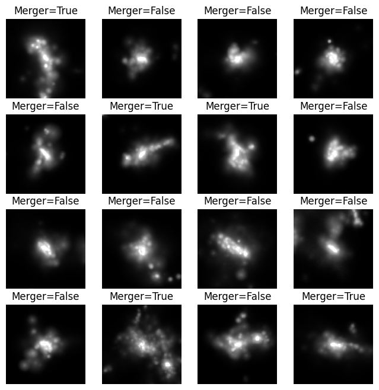
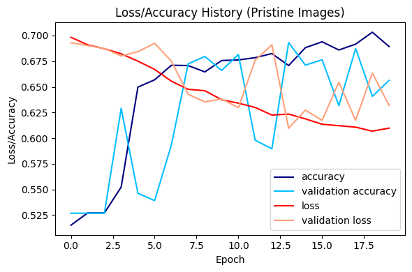
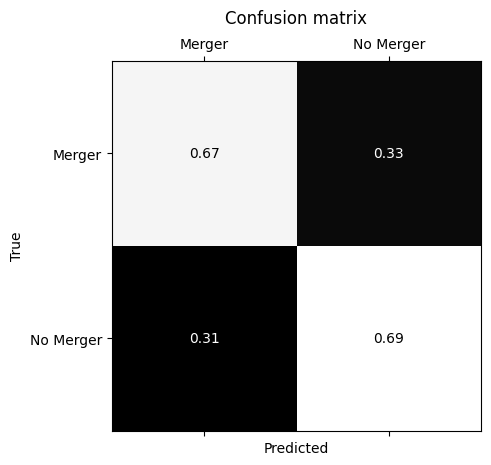

<!DOCTYPE html>


<html lang="en" data-content_root="" >

  <head>
    <meta charset="utf-8" />
    <meta name="viewport" content="width=device-width, initial-scale=1.0" /><meta name="generator" content="Docutils 0.18.1: http://docutils.sourceforge.net/" />

    <title>Classifying JWST-HST galaxy mergers with CNNs &#8212; Hello Universe!</title>
  
  
  
  <script data-cfasync="false">
    document.documentElement.dataset.mode = localStorage.getItem("mode") || "";
    document.documentElement.dataset.theme = localStorage.getItem("theme") || "";
  </script>
  
  <!-- Loaded before other Sphinx assets -->
  <link href="../../../_static/styles/theme.css?digest=3ee479438cf8b5e0d341" rel="stylesheet" />
<link href="../../../_static/styles/bootstrap.css?digest=3ee479438cf8b5e0d341" rel="stylesheet" />
<link href="../../../_static/styles/pydata-sphinx-theme.css?digest=3ee479438cf8b5e0d341" rel="stylesheet" />

  
  <link href="../../../_static/vendor/fontawesome/6.5.2/css/all.min.css?digest=3ee479438cf8b5e0d341" rel="stylesheet" />
  <link rel="preload" as="font" type="font/woff2" crossorigin href="../../../_static/vendor/fontawesome/6.5.2/webfonts/fa-solid-900.woff2" />
<link rel="preload" as="font" type="font/woff2" crossorigin href="../../../_static/vendor/fontawesome/6.5.2/webfonts/fa-brands-400.woff2" />
<link rel="preload" as="font" type="font/woff2" crossorigin href="../../../_static/vendor/fontawesome/6.5.2/webfonts/fa-regular-400.woff2" />

    <link rel="stylesheet" type="text/css" href="../../../_static/pygments.css" />
    <link rel="stylesheet" href="../../../_static/styles/sphinx-book-theme.css?digest=14f4ca6b54d191a8c7657f6c759bf11a5fb86285" type="text/css" />
    <link rel="stylesheet" type="text/css" href="../../../_static/togglebutton.css" />
    <link rel="stylesheet" type="text/css" href="../../../_static/copybutton.css" />
    <link rel="stylesheet" type="text/css" href="../../../_static/mystnb.4510f1fc1dee50b3e5859aac5469c37c29e427902b24a333a5f9fcb2f0b3ac41.css" />
    <link rel="stylesheet" type="text/css" href="../../../_static/sphinx-thebe.css" />
    <link rel="stylesheet" type="text/css" href="../../../_static/table.css" />
    <link rel="stylesheet" type="text/css" href="../../../_static/design-style.4045f2051d55cab465a707391d5b2007.min.css" />
  
  <!-- Pre-loaded scripts that we'll load fully later -->
  <link rel="preload" as="script" href="../../../_static/scripts/bootstrap.js?digest=3ee479438cf8b5e0d341" />
<link rel="preload" as="script" href="../../../_static/scripts/pydata-sphinx-theme.js?digest=3ee479438cf8b5e0d341" />
  <script src="../../../_static/vendor/fontawesome/6.5.2/js/all.min.js?digest=3ee479438cf8b5e0d341"></script>

    <script data-url_root="../../../" id="documentation_options" src="../../../_static/documentation_options.js"></script>
    <script src="../../../_static/jquery.js"></script>
    <script src="../../../_static/underscore.js"></script>
    <script src="../../../_static/_sphinx_javascript_frameworks_compat.js"></script>
    <script src="../../../_static/doctools.js"></script>
    <script src="../../../_static/clipboard.min.js"></script>
    <script src="../../../_static/copybutton.js"></script>
    <script src="../../../_static/scripts/sphinx-book-theme.js?digest=5a5c038af52cf7bc1a1ec88eea08e6366ee68824"></script>
    <script>let toggleHintShow = 'Click to show';</script>
    <script>let toggleHintHide = 'Click to hide';</script>
    <script>let toggleOpenOnPrint = 'true';</script>
    <script src="../../../_static/togglebutton.js"></script>
    <script>var togglebuttonSelector = '.toggle, .admonition.dropdown';</script>
    <script src="../../../_static/design-tabs.js"></script>
    <script>const THEBE_JS_URL = "https://unpkg.com/thebe@0.8.2/lib/index.js"
const thebe_selector = ".thebe,.cell"
const thebe_selector_input = "pre"
const thebe_selector_output = ".output, .cell_output"
</script>
    <script async="async" src="../../../_static/sphinx-thebe.js"></script>
    <script>DOCUMENTATION_OPTIONS.pagename = 'notebooks/hello-universe/Classifying_JWST-HST_galaxy_mergers_with_CNNs/Classifying_JWST-HST_galaxy_mergers_with_CNNs';</script>
    <link rel="index" title="Index" href="../../../genindex.html" />
    <link rel="search" title="Search" href="../../../search.html" />
    <link rel="next" title="Predicting galaxy redshift via regression on 3D-HST photometry" href="../Regressing_3D-HST_galaxy_redshift_with_decision_trees/Regressing_3D-HST_galaxy_redshift_with_decision_trees.html" />
    <link rel="prev" title="Classifying flaring stars with stella: a convolutional neural network for TESS" href="../Classifying_TESS_flares_with_CNNs/Classifying_TESS_flares_with_CNNs.html" />
  <meta name="viewport" content="width=device-width, initial-scale=1"/>
  <meta name="docsearch:language" content="en"/>
  </head>
  
  
  <body data-bs-spy="scroll" data-bs-target=".bd-toc-nav" data-offset="180" data-bs-root-margin="0px 0px -60%" data-default-mode="">

  
  
  <div id="pst-skip-link" class="skip-link d-print-none"><a href="#main-content">Skip to main content</a></div>
  
  <div id="pst-scroll-pixel-helper"></div>
  
  <button type="button" class="btn rounded-pill" id="pst-back-to-top">
    <i class="fa-solid fa-arrow-up"></i>Back to top</button>

  
  <input type="checkbox"
          class="sidebar-toggle"
          id="pst-primary-sidebar-checkbox"/>
  <label class="overlay overlay-primary" for="pst-primary-sidebar-checkbox"></label>
  
  <input type="checkbox"
          class="sidebar-toggle"
          id="pst-secondary-sidebar-checkbox"/>
  <label class="overlay overlay-secondary" for="pst-secondary-sidebar-checkbox"></label>
  
  <div class="search-button__wrapper">
    <div class="search-button__overlay"></div>
    <div class="search-button__search-container">
<form class="bd-search d-flex align-items-center"
      action="../../../search.html"
      method="get">
  <i class="fa-solid fa-magnifying-glass"></i>
  <input type="search"
         class="form-control"
         name="q"
         id="search-input"
         placeholder="Search this book..."
         aria-label="Search this book..."
         autocomplete="off"
         autocorrect="off"
         autocapitalize="off"
         spellcheck="false"/>
  <span class="search-button__kbd-shortcut"><kbd class="kbd-shortcut__modifier">Ctrl</kbd>+<kbd>K</kbd></span>
</form></div>
  </div>

  <div class="pst-async-banner-revealer d-none">
  <aside id="bd-header-version-warning" class="d-none d-print-none" aria-label="Version warning"></aside>
</div>

  
    <header class="bd-header navbar navbar-expand-lg bd-navbar d-print-none">
    </header>
  

  <div class="bd-container">
    <div class="bd-container__inner bd-page-width">
      
      
      
      <div class="bd-sidebar-primary bd-sidebar">
        

  
  <div class="sidebar-header-items sidebar-primary__section">
    
    
    
    
  </div>
  
    <div class="sidebar-primary-items__start sidebar-primary__section">
        <div class="sidebar-primary-item">

  

<a class="navbar-brand logo" href="../../../intro.html">
  
  
  
  
  
    
    
      
    
    
    
    <script>document.write(``);</script>
  
  
</a></div>
        <div class="sidebar-primary-item"><nav class="bd-links" id="bd-docs-nav" aria-label="Main">
    <div class="bd-toc-item navbar-nav active">
        
        <ul class="nav bd-sidenav bd-sidenav__home-link">
            <li class="toctree-l1">
                <a class="reference internal" href="../../../intro.html">
                    Hello Universe
                </a>
            </li>
        </ul>
        <ul class="current nav bd-sidenav">
<li class="toctree-l1"><a class="reference internal" href="../Classifying_TESS_flares_with_CNNs/Classifying_TESS_flares_with_CNNs.html">Classifying flaring stars with stella: a convolutional neural network for TESS</a></li>
<li class="toctree-l1 current active"><a class="current reference internal" href="#">Classifying JWST-HST galaxy mergers with CNNs</a></li>
<li class="toctree-l1"><a class="reference internal" href="../Regressing_3D-HST_galaxy_redshift_with_decision_trees/Regressing_3D-HST_galaxy_redshift_with_decision_trees.html">Predicting galaxy redshift via regression on 3D-HST photometry</a></li>
<li class="toctree-l1"><a class="reference internal" href="../Classifying_PanSTARRS_sources_with_unsupervised_learning/Classifying_PanSTARRS_sources_with_unsupervised_learning.html">Classifying Pan-STARRS sources with unsupervised and supervised learning</a></li>
<li class="toctree-l1"><a class="reference internal" href="../Interpreting_CNNs/Interpreting_CNNs.html">Interpreting Convolutional Neural Networks</a></li>
</ul>

    </div>
</nav></div>
    </div>
  
  
  <div class="sidebar-primary-items__end sidebar-primary__section">
  </div>
  
  <div id="rtd-footer-container"></div>


      </div>
      
      <main id="main-content" class="bd-main" role="main">
        
        

<div class="sbt-scroll-pixel-helper"></div>

          <div class="bd-content">
            <div class="bd-article-container">
              
              <div class="bd-header-article d-print-none">
<div class="header-article-items header-article__inner">
  
    <div class="header-article-items__start">
      
        <div class="header-article-item"><label class="sidebar-toggle primary-toggle btn btn-sm" for="__primary" title="Toggle primary sidebar" data-bs-placement="bottom" data-bs-toggle="tooltip">
  <span class="fa-solid fa-bars"></span>
</label></div>
      
    </div>
  
  
    <div class="header-article-items__end">
      
        <div class="header-article-item">

<div class="article-header-buttons">


<div class="dropdown dropdown-source-buttons">
  <button class="btn dropdown-toggle" type="button" data-bs-toggle="dropdown" aria-expanded="false" aria-label="Source repositories">
    <i class="fab fa-github"></i>
  </button>
  <ul class="dropdown-menu">
      
      
      
      <li><a href="https://github.com/spacetelescope/hellouniverse" target="_blank"
   class="btn btn-sm btn-source-repository-button dropdown-item"
   title="Source repository"
   data-bs-placement="left" data-bs-toggle="tooltip"
>
  

<span class="btn__icon-container">
  <i class="fab fa-github"></i>
  </span>
<span class="btn__text-container">Repository</span>
</a>
</li>
      
      
      
      
      <li><a href="https://github.com/spacetelescope/hellouniverse/issues/new?title=Issue%20on%20page%20%2Fnotebooks/hello-universe/Classifying_JWST-HST_galaxy_mergers_with_CNNs/Classifying_JWST-HST_galaxy_mergers_with_CNNs.html&body=Your%20issue%20content%20here." target="_blank"
   class="btn btn-sm btn-source-issues-button dropdown-item"
   title="Open an issue"
   data-bs-placement="left" data-bs-toggle="tooltip"
>
  

<span class="btn__icon-container">
  <i class="fas fa-lightbulb"></i>
  </span>
<span class="btn__text-container">Open issue</span>
</a>
</li>
      
  </ul>
</div>


<div class="dropdown dropdown-download-buttons">
  <button class="btn dropdown-toggle" type="button" data-bs-toggle="dropdown" aria-expanded="false" aria-label="Download this page">
    <i class="fas fa-download"></i>
  </button>
  <ul class="dropdown-menu">
      
      
      
      <li><a href="../../../_sources/notebooks/hello-universe/Classifying_JWST-HST_galaxy_mergers_with_CNNs/Classifying_JWST-HST_galaxy_mergers_with_CNNs.ipynb" target="_blank"
   class="btn btn-sm btn-download-source-button dropdown-item"
   title="Download source file"
   data-bs-placement="left" data-bs-toggle="tooltip"
>
  

<span class="btn__icon-container">
  <i class="fas fa-file"></i>
  </span>
<span class="btn__text-container">.ipynb</span>
</a>
</li>
      
      
      
      
      <li>
<button onclick="window.print()"
  class="btn btn-sm btn-download-pdf-button dropdown-item"
  title="Print to PDF"
  data-bs-placement="left" data-bs-toggle="tooltip"
>
  

<span class="btn__icon-container">
  <i class="fas fa-file-pdf"></i>
  </span>
<span class="btn__text-container">.pdf</span>
</button>
</li>
      
  </ul>
</div>


<button onclick="toggleFullScreen()"
  class="btn btn-sm btn-fullscreen-button"
  title="Fullscreen mode"
  data-bs-placement="bottom" data-bs-toggle="tooltip"
>
  

<span class="btn__icon-container">
  <i class="fas fa-expand"></i>
  </span>

</button>


<script>
document.write(`
  <button class="btn btn-sm navbar-btn theme-switch-button" title="light/dark" aria-label="light/dark" data-bs-placement="bottom" data-bs-toggle="tooltip">
    <span class="theme-switch nav-link" data-mode="light"><i class="fa-solid fa-sun fa-lg"></i></span>
    <span class="theme-switch nav-link" data-mode="dark"><i class="fa-solid fa-moon fa-lg"></i></span>
    <span class="theme-switch nav-link" data-mode="auto"><i class="fa-solid fa-circle-half-stroke fa-lg"></i></span>
  </button>
`);
</script>


<script>
document.write(`
  <button class="btn btn-sm navbar-btn search-button search-button__button" title="Search" aria-label="Search" data-bs-placement="bottom" data-bs-toggle="tooltip">
    <i class="fa-solid fa-magnifying-glass fa-lg"></i>
  </button>
`);
</script>
<label class="sidebar-toggle secondary-toggle btn btn-sm" for="__secondary"title="Toggle secondary sidebar" data-bs-placement="bottom" data-bs-toggle="tooltip">
    <span class="fa-solid fa-list"></span>
</label>
</div></div>
      
    </div>
  
</div>
</div>
              
              

<div id="jb-print-docs-body" class="onlyprint">
    <h1>Classifying JWST-HST galaxy mergers with CNNs</h1>
    <!-- Table of contents -->
    <div id="print-main-content">
        <div id="jb-print-toc">
            
            <div>
                <h2> Contents </h2>
            </div>
            <nav aria-label="Page">
                <ul class="visible nav section-nav flex-column">
<li class="toc-h2 nav-item toc-entry"><a class="reference internal nav-link" href="#learning-goals">Learning Goals</a></li>
<li class="toc-h2 nav-item toc-entry"><a class="reference internal nav-link" href="#introduction">Introduction</a></li>
<li class="toc-h2 nav-item toc-entry"><a class="reference internal nav-link" href="#imports">Imports</a><ul class="nav section-nav flex-column">
<li class="toc-h3 nav-item toc-entry"><a class="reference internal nav-link" href="#load-the-data-and-visualize-a-sample-of-the-data">1. Load the data and visualize a sample of the data</a><ul class="nav section-nav flex-column">
<li class="toc-h4 nav-item toc-entry"><a class="reference internal nav-link" href="#load-the-data">Load the data</a></li>
<li class="toc-h4 nav-item toc-entry"><a class="reference internal nav-link" href="#plot-example-images">Plot example images</a></li>
</ul>
</li>
</ul>
</li>
<li class="toc-h2 nav-item toc-entry"><a class="reference internal nav-link" href="#divide-data-into-training-validation-and-testing-sets">2. Divide data into training, validation, and testing sets</a><ul class="nav section-nav flex-column">
<li class="toc-h3 nav-item toc-entry"><a class="reference internal nav-link" href="#build-a-cnn-in-keras">3. Build a CNN in <code class="docutils literal notranslate"><span class="pre">Keras</span></code></a></li>
<li class="toc-h3 nav-item toc-entry"><a class="reference internal nav-link" href="#compile-the-cnn">4. Compile the CNN</a></li>
<li class="toc-h3 nav-item toc-entry"><a class="reference internal nav-link" href="#train-the-cnn-to-perform-a-classification-task">5. Train the CNN to perform a classification task</a></li>
<li class="toc-h3 nav-item toc-entry"><a class="reference internal nav-link" href="#visualize-cnn-performance">6. Visualize CNN performance</a></li>
<li class="toc-h3 nav-item toc-entry"><a class="reference internal nav-link" href="#predict-mergers">7. Predict mergers!</a></li>
</ul>
</li>
<li class="toc-h2 nav-item toc-entry"><a class="reference internal nav-link" href="#faq">FAQ</a><ul class="nav section-nav flex-column">
<li class="toc-h3 nav-item toc-entry"><a class="reference internal nav-link" href="#extensions-exercises">Extensions/Exercises</a></li>
</ul>
</li>
<li class="toc-h2 nav-item toc-entry"><a class="reference internal nav-link" href="#about-this-notebook">About this Notebook</a></li>
<li class="toc-h2 nav-item toc-entry"><a class="reference internal nav-link" href="#citations">Citations</a></li>
</ul>
            </nav>
        </div>
    </div>
</div>

              
                
<div id="searchbox"></div>
                <article class="bd-article">
                  
  <p><a id="top"></a></p>
<section class="tex2jax_ignore mathjax_ignore" id="classifying-jwst-hst-galaxy-mergers-with-cnns">
<h1>Classifying JWST-HST galaxy mergers with CNNs<a class="headerlink" href="#classifying-jwst-hst-galaxy-mergers-with-cnns" title="Permalink to this heading">#</a></h1>
<hr class="docutils" />
<section id="learning-goals">
<h2>Learning Goals<a class="headerlink" href="#learning-goals" title="Permalink to this heading">#</a></h2>
<p><strong>In this tutorial, you will see an example of building, compiling, and training a CNN on simulated astronomical data.</strong>
By the end of this tutorial you will have a working example of a simple Convolutional Neural Network (CNN) in <code class="docutils literal notranslate"><span class="pre">Keras</span></code>.</p>
</section>
<section id="introduction">
<h2>Introduction<a class="headerlink" href="#introduction" title="Permalink to this heading">#</a></h2>
<p>CNNs are a class of machine learning (ML) algorithms that can extract information from images.
In this notebook, you will walk through the basic steps of applying a CNN to data:</p>
<ol class="arabic simple">
<li><p>Load the data and visualize a sample of the data.</p></li>
<li><p>Divide the data into training, validation, and testing sets.</p></li>
<li><p>Build a CNN in <code class="docutils literal notranslate"><span class="pre">Keras</span></code>.</p></li>
<li><p>Compile the CNN.</p></li>
<li><p>Train the CNN to perform a classification task.</p></li>
<li><p>Evaluate the results.</p></li>
</ol>
<p>CNNs can be applied to a wide range of image recognition tasks, including classification and regression.
In this tutorial, we will build, compile, and train CNN to classify whether a galaxy has undergone a merger, using simulated Hubble Space Telescope images of galaxies.
This work is based on the public data and code from <a href='https://ui.adsabs.harvard.edu/abs/2020A%26C....3200390C/abstract'>DeepMerge (Ciprijanovic et al. 2020)</a>.</p>
<p><strong>NOTE:</strong> <em>The DeepMerge team has <a class="reference external" href="https://github.com/deepskies/deepmerge-public">publicly-available code</a> for demonstrating the architecture and optimal performace of the model, which we encourage you to check out! The goal of this notebook is to step through the model building and training process.</em></p>
</section>
<section id="imports">
<h2>Imports<a class="headerlink" href="#imports" title="Permalink to this heading">#</a></h2>
<p>This notebook uses the following packages:</p>
<ul class="simple">
<li><p><code class="docutils literal notranslate"><span class="pre">numpy</span></code> to handle array functions</p></li>
<li><p><code class="docutils literal notranslate"><span class="pre">astropy</span></code> for downloading and accessing FITS files</p></li>
<li><p><code class="docutils literal notranslate"><span class="pre">matplotlib.pyplot</span></code> for plotting data</p></li>
<li><p><code class="docutils literal notranslate"><span class="pre">keras</span></code> and <code class="docutils literal notranslate"><span class="pre">tensorflow</span></code> for building the CNN</p></li>
<li><p><code class="docutils literal notranslate"><span class="pre">sklearn</span></code> for some utility functions</p></li>
</ul>
<p>If you do not have these packages installed, you can install them using <a class="reference external" href="https://pip.pypa.io/en/stable/"><code class="docutils literal notranslate"><span class="pre">pip</span></code></a> or <a class="reference external" href="https://docs.conda.io/en/latest/"><code class="docutils literal notranslate"><span class="pre">conda</span></code></a>.</p>
<div class="cell docutils container">
<div class="cell_input docutils container">
<div class="highlight-ipython3 notranslate"><div class="highlight"><pre><span></span><span class="c1"># arrays</span>
<span class="kn">import</span> <span class="nn">numpy</span> <span class="k">as</span> <span class="nn">np</span>

<span class="c1"># fits</span>
<span class="kn">from</span> <span class="nn">astropy.io</span> <span class="kn">import</span> <span class="n">fits</span>
<span class="kn">from</span> <span class="nn">astropy.utils.data</span> <span class="kn">import</span> <span class="n">download_file</span>
<span class="kn">from</span> <span class="nn">astropy.visualization</span> <span class="kn">import</span> <span class="n">simple_norm</span>

<span class="c1"># plotting</span>
<span class="kn">from</span> <span class="nn">matplotlib</span> <span class="kn">import</span> <span class="n">pyplot</span> <span class="k">as</span> <span class="n">plt</span>

<span class="c1"># keras</span>
<span class="kn">from</span> <span class="nn">keras.models</span> <span class="kn">import</span> <span class="n">Model</span>
<span class="kn">from</span> <span class="nn">keras.layers</span> <span class="kn">import</span> <span class="n">Input</span><span class="p">,</span> <span class="n">Flatten</span><span class="p">,</span> <span class="n">Dense</span><span class="p">,</span> <span class="n">Activation</span><span class="p">,</span> <span class="n">Dropout</span><span class="p">,</span> <span class="n">BatchNormalization</span>
<span class="kn">from</span> <span class="nn">keras.layers</span> <span class="kn">import</span> <span class="n">Convolution2D</span><span class="p">,</span> <span class="n">MaxPooling2D</span>
<span class="kn">from</span> <span class="nn">keras.regularizers</span> <span class="kn">import</span> <span class="n">l2</span>
<span class="kn">from</span> <span class="nn">keras.callbacks</span> <span class="kn">import</span> <span class="n">EarlyStopping</span>

<span class="c1"># sklearn (for machine learning)</span>
<span class="kn">from</span> <span class="nn">sklearn.model_selection</span> <span class="kn">import</span> <span class="n">train_test_split</span>
<span class="kn">from</span> <span class="nn">sklearn</span> <span class="kn">import</span> <span class="n">metrics</span>

<span class="c1"># from IPython import get_ipython</span>
<span class="c1"># get_ipython().run_line_magic(&#39;matplotlib&#39;, &#39;notebook&#39;)</span>
</pre></div>
</div>
</div>
<div class="cell_output docutils container">
<div class="output stderr highlight-myst-ansi notranslate"><div class="highlight"><pre><span></span>2024-06-04 17:38:56.033212: I external/local_tsl/tsl/cuda/cudart_stub.cc:32] Could not find cuda drivers on your machine, GPU will not be used.
2024-06-04 17:38:56.036004: I external/local_tsl/tsl/cuda/cudart_stub.cc:32] Could not find cuda drivers on your machine, GPU will not be used.
2024-06-04 17:38:56.068877: I tensorflow/core/platform/cpu_feature_guard.cc:210] This TensorFlow binary is optimized to use available CPU instructions in performance-critical operations.
To enable the following instructions: AVX2 FMA, in other operations, rebuild TensorFlow with the appropriate compiler flags.
</pre></div>
</div>
<div class="output stderr highlight-myst-ansi notranslate"><div class="highlight"><pre><span></span>2024-06-04 17:38:56.985804: W tensorflow/compiler/tf2tensorrt/utils/py_utils.cc:38] TF-TRT Warning: Could not find TensorRT
</pre></div>
</div>
</div>
</div>
<section id="load-the-data-and-visualize-a-sample-of-the-data">
<h3>1. Load the data and visualize a sample of the data<a class="headerlink" href="#load-the-data-and-visualize-a-sample-of-the-data" title="Permalink to this heading">#</a></h3>
<p>Load the simulated galaxy observations (3-band images) and merger probabilities (output labels).</p>
<p>In total, there are 15,426 simulated images, each in three filters (F814W from the Advanced Camera for Surveys and F160W from the Wide Field Camera 3 on the Hubble Space Telescope (HST), and F160W and F356W from Near Infrared Camera on the James Webb Space Telescope (JWST)), retrieved and augmented from synthetic observations of the Illustris cosmological simulation. The sample includes 8120 galaxy mergers and 7306 non-mergers. Two versions of the sample are available, with and without realistic observational and experimental noise (“pristine” and “noisy”). The sample construction and augmentation process for the HST images is described in detail in <a class="reference external" href="https://doi.org/10.1016/j.ascom.2020.100390">Ciprijanovic et al. 2020</a>, and is identical for the mock JWST images.</p>
<p>These datasets are hosted at the Mikulski Archive for Space Telescopes as an the <a class="reference external" href="https://archive.stsci.edu/doi/resolve/resolve.html?doi=10.17909/t9-vqk6-pc80">DEEPMERGE</a> high-level science product (HLSP).</p>
<p>The CNN will be trained to distinguish between merging and non-merging galaxies.</p>
<section id="load-the-data">
<h4>Load the data<a class="headerlink" href="#load-the-data" title="Permalink to this heading">#</a></h4>
<p>The simulated images are stored in FITS format. We refer you to the <a class="reference external" href="https://docs.astropy.org/en/stable/io/fits/index.html">Astropy Documentation</a> for further information about this format.</p>
<p>For this example, we will download the “pristine” set of galaxy images, i.e., those without added observational noise. To select the “noisy” sample, change the version below. Alternatively, you can download data files from the <a class="reference external" href="https://stdatu.stsci.edu/hlsp/deepmerge">DEEPMERGE</a> website.</p>
<div class="cell docutils container">
<div class="cell_input docutils container">
<div class="highlight-ipython3 notranslate"><div class="highlight"><pre><span></span><span class="n">version</span> <span class="o">=</span> <span class="s1">&#39;pristine&#39;</span>
</pre></div>
</div>
</div>
</div>
<div class="cell docutils container">
<div class="cell_input docutils container">
<div class="highlight-ipython3 notranslate"><div class="highlight"><pre><span></span><span class="o">%%time</span>
<span class="n">file_url</span> <span class="o">=</span> <span class="s1">&#39;https://archive.stsci.edu/hlsps/deepmerge/hlsp_deepmerge_hst-jwst_acs-wfc3-nircam_illustris-z2_f814w-f160w-f356w_v1_sim-&#39;</span><span class="o">+</span><span class="n">version</span><span class="o">+</span><span class="s1">&#39;.fits&#39;</span>
<span class="n">hdu</span> <span class="o">=</span> <span class="n">fits</span><span class="o">.</span><span class="n">open</span><span class="p">(</span><span class="n">download_file</span><span class="p">(</span><span class="n">file_url</span><span class="p">,</span> <span class="n">cache</span><span class="o">=</span><span class="kc">True</span><span class="p">,</span> <span class="n">show_progress</span><span class="o">=</span><span class="kc">True</span><span class="p">))</span>
</pre></div>
</div>
</div>
<div class="cell_output docutils container">
<div class="output stream highlight-myst-ansi notranslate"><div class="highlight"><pre><span></span>CPU times: user 2.96 s, sys: 4.18 s, total: 7.14 s
Wall time: 2min 26s
</pre></div>
</div>
</div>
</div>
<p>Explore the header of the file for information about its contents</p>
<div class="cell docutils container">
<div class="cell_input docutils container">
<div class="highlight-ipython3 notranslate"><div class="highlight"><pre><span></span><span class="n">hdu</span><span class="p">[</span><span class="mi">0</span><span class="p">]</span><span class="o">.</span><span class="n">header</span>
</pre></div>
</div>
</div>
<div class="cell_output docutils container">
<div class="output text_plain highlight-myst-ansi notranslate"><div class="highlight"><pre><span></span>SIMPLE  =                    T / conforms to FITS standard                      
BITPIX  =                  -64 / array data type                                
NAXIS   =                    4 / number of array dimensions                     
NAXIS1  =                   75                                                  
NAXIS2  =                   75                                                  
NAXIS3  =                    3                                                  
NAXIS4  =                15426                                                  
EXTEND  =                    T                                                  
NAME1   = &#39;ImageX  &#39;                                                            
NAME2   = &#39;ImageY  &#39;                                                            
NAME3   = &#39;filter  &#39;           / F814W,F356W,F160W                              
NAME4   = &#39;object  &#39;                                                            
EXTNAME = &#39;Images  &#39;                                                            
BUNIT   = &#39;microjanskies/arcsec^2&#39; / image units                                
PIXSIZE =               0.1875 / arcsec                                         
DOI     = &#39;10.17909/t9-vqk6-pc80&#39;                                               
HLSPID  = &#39;DEEPMERGE&#39;                                                           
HLSPLEAD= &#39;Aleksandra Ciprijanovic&#39;                                             
HLSPNAME= &#39;Mock Image Training Sets for DeepMerge&#39;                              
SIMULATD=                    T                                                  
HLSPTARG= &#39;Illustris Simulation&#39;                                                
HLSPVER = &#39;v1      &#39;                                                            
INSTRUME= &#39;ACS,WFC3,NIRCam&#39;                                                     
LICENSE = &#39;CC BY 4.0&#39;                                                           
LICENURL= &#39;https://creativecommons.org/licenses/by/4.0/&#39;                        
OBSERVAT= &#39;HST,JWST&#39;                                                            
TELESCOP= &#39;HST,JWST&#39;                                                            
PROPOSID= &#39;HST AR#13887&#39;                                                        
REFERENC= &#39;2021MNRAS.506..677C&#39;                                                 
</pre></div>
</div>
</div>
</div>
<div class="cell docutils container">
<div class="cell_input docutils container">
<div class="highlight-ipython3 notranslate"><div class="highlight"><pre><span></span><span class="n">hdu</span><span class="p">[</span><span class="mi">1</span><span class="p">]</span><span class="o">.</span><span class="n">header</span>
</pre></div>
</div>
</div>
<div class="cell_output docutils container">
<div class="output text_plain highlight-myst-ansi notranslate"><div class="highlight"><pre><span></span>XTENSION= &#39;BINTABLE&#39;           / binary table extension                         
BITPIX  =                    8 / array data type                                
NAXIS   =                    2 / number of array dimensions                     
NAXIS1  =                    8 / length of dimension 1                          
NAXIS2  =                15426 / length of dimension 2                          
PCOUNT  =                    0 / number of group parameters                     
GCOUNT  =                    1 / number of groups                               
TFIELDS =                    1 / number of table fields                         
TTYPE1  = &#39;MergerLabel&#39;                                                         
TFORM1  = &#39;D       &#39;                                                            
EXTNAME = &#39;MergerLabel&#39;                                                         
</pre></div>
</div>
</div>
</div>
<p>The file includes a primary header card with overall information, an image card with the simulated images, and a bintable with the merger labels for the images (1=merger, 0=non-merger).</p>
</section>
<section id="plot-example-images">
<h4>Plot example images<a class="headerlink" href="#plot-example-images" title="Permalink to this heading">#</a></h4>
<p>For a random selection of images, plot the images and their corresponding labels:</p>
<div class="cell docutils container">
<div class="cell_input docutils container">
<div class="highlight-ipython3 notranslate"><div class="highlight"><pre><span></span><span class="n">hdu</span><span class="p">[</span><span class="mi">0</span><span class="p">]</span><span class="o">.</span><span class="n">data</span><span class="o">.</span><span class="n">shape</span>
</pre></div>
</div>
</div>
<div class="cell_output docutils container">
<div class="output text_plain highlight-myst-ansi notranslate"><div class="highlight"><pre><span></span>(15426, 3, 75, 75)
</pre></div>
</div>
</div>
</div>
<div class="cell docutils container">
<div class="cell_input docutils container">
<div class="highlight-ipython3 notranslate"><div class="highlight"><pre><span></span><span class="c1"># set the random seed to get the same random set of images each time, or comment it out to get different ones!</span>
<span class="c1"># np.random.seed(206265)</span>

<span class="c1"># select 16 random image indices:</span>
<span class="n">example_ids</span> <span class="o">=</span> <span class="n">np</span><span class="o">.</span><span class="n">random</span><span class="o">.</span><span class="n">choice</span><span class="p">(</span><span class="n">hdu</span><span class="p">[</span><span class="mi">1</span><span class="p">]</span><span class="o">.</span><span class="n">data</span><span class="o">.</span><span class="n">shape</span><span class="p">[</span><span class="mi">0</span><span class="p">],</span> <span class="mi">16</span><span class="p">)</span>
<span class="c1"># pull the F160W image (index=1) from the simulated dataset for these selections</span>
<span class="n">examples</span> <span class="o">=</span> <span class="p">[</span><span class="n">hdu</span><span class="p">[</span><span class="mi">0</span><span class="p">]</span><span class="o">.</span><span class="n">data</span><span class="p">[</span><span class="n">j</span><span class="p">,</span> <span class="mi">1</span><span class="p">,</span> <span class="p">:,</span> <span class="p">:]</span> <span class="k">for</span> <span class="n">j</span> <span class="ow">in</span> <span class="n">example_ids</span><span class="p">]</span>

<span class="c1"># initialize your figure</span>
<span class="n">fig</span> <span class="o">=</span> <span class="n">plt</span><span class="o">.</span><span class="n">figure</span><span class="p">(</span><span class="n">figsize</span><span class="o">=</span><span class="p">(</span><span class="mi">8</span><span class="p">,</span> <span class="mi">8</span><span class="p">))</span> 

<span class="c1"># loop through the randomly selected images and plot with labels</span>
<span class="k">for</span> <span class="n">i</span><span class="p">,</span> <span class="n">image</span> <span class="ow">in</span> <span class="nb">enumerate</span><span class="p">(</span><span class="n">examples</span><span class="p">):</span>
    <span class="n">ax</span> <span class="o">=</span> <span class="n">fig</span><span class="o">.</span><span class="n">add_subplot</span><span class="p">(</span><span class="mi">4</span><span class="p">,</span> <span class="mi">4</span><span class="p">,</span> <span class="n">i</span><span class="o">+</span><span class="mi">1</span><span class="p">)</span>
    <span class="n">norm</span> <span class="o">=</span> <span class="n">simple_norm</span><span class="p">(</span><span class="n">image</span><span class="p">,</span> <span class="s1">&#39;log&#39;</span><span class="p">,</span> <span class="n">max_percent</span><span class="o">=</span><span class="mf">99.75</span><span class="p">)</span>

    <span class="n">ax</span><span class="o">.</span><span class="n">imshow</span><span class="p">(</span><span class="n">image</span><span class="p">,</span> <span class="n">aspect</span><span class="o">=</span><span class="s1">&#39;equal&#39;</span><span class="p">,</span> <span class="n">cmap</span><span class="o">=</span><span class="s1">&#39;binary_r&#39;</span><span class="p">,</span> <span class="n">norm</span><span class="o">=</span><span class="n">norm</span><span class="p">)</span>
    <span class="n">ax</span><span class="o">.</span><span class="n">set_title</span><span class="p">(</span><span class="s1">&#39;Merger=&#39;</span><span class="o">+</span><span class="nb">str</span><span class="p">(</span><span class="nb">bool</span><span class="p">(</span><span class="n">hdu</span><span class="p">[</span><span class="mi">1</span><span class="p">]</span><span class="o">.</span><span class="n">data</span><span class="p">[</span><span class="n">example_ids</span><span class="p">[</span><span class="n">i</span><span class="p">]][</span><span class="mi">0</span><span class="p">])))</span>
    
    <span class="n">ax</span><span class="o">.</span><span class="n">axis</span><span class="p">(</span><span class="s1">&#39;off&#39;</span><span class="p">)</span>
    
<span class="n">plt</span><span class="o">.</span><span class="n">show</span><span class="p">()</span>
</pre></div>
</div>
</div>
<div class="cell_output docutils container">

</div>
</div>
</section>
</section>
</section>
<section id="divide-data-into-training-validation-and-testing-sets">
<h2>2. Divide data into training, validation, and testing sets<a class="headerlink" href="#divide-data-into-training-validation-and-testing-sets" title="Permalink to this heading">#</a></h2>
<p>To divide the data set into training, validation, and testing data we will use Scikit-Learn’s <a class="reference external" href="https://scikit-learn.org/stable/modules/generated/sklearn.model_selection.train_test_split.html"><code class="docutils literal notranslate"><span class="pre">train_test_split</span></code></a> function.</p>
<p>We will denote the input images as <code class="docutils literal notranslate"><span class="pre">X</span></code> and their corresponding labels (i.e. the integer indicating whether or not they are a merger) as <code class="docutils literal notranslate"><span class="pre">y</span></code>, following the convention used by <code class="docutils literal notranslate"><span class="pre">sklearn</span></code>.</p>
<div class="cell docutils container">
<div class="cell_input docutils container">
<div class="highlight-ipython3 notranslate"><div class="highlight"><pre><span></span><span class="n">X</span> <span class="o">=</span> <span class="n">hdu</span><span class="p">[</span><span class="mi">0</span><span class="p">]</span><span class="o">.</span><span class="n">data</span>
<span class="n">y</span> <span class="o">=</span> <span class="n">hdu</span><span class="p">[</span><span class="mi">1</span><span class="p">]</span><span class="o">.</span><span class="n">data</span>
</pre></div>
</div>
</div>
</div>
<p>Following the authors, we will split the data into 70:10:20 ratio of train:validate:test</p>
<div class="cell docutils container">
<div class="cell_input docutils container">
<div class="highlight-ipython3 notranslate"><div class="highlight"><pre><span></span><span class="c1"># as above, set the random seed to randomly split the images in a repeatable way. Feel free to try different values!</span>
<span class="n">random_state</span> <span class="o">=</span> <span class="mi">42</span>

<span class="n">X</span> <span class="o">=</span> <span class="n">np</span><span class="o">.</span><span class="n">asarray</span><span class="p">(</span><span class="n">X</span><span class="p">)</span><span class="o">.</span><span class="n">astype</span><span class="p">(</span><span class="s1">&#39;float32&#39;</span><span class="p">)</span>
<span class="n">y</span> <span class="o">=</span> <span class="n">np</span><span class="o">.</span><span class="n">asarray</span><span class="p">(</span><span class="n">y</span><span class="p">)</span><span class="o">.</span><span class="n">astype</span><span class="p">(</span><span class="s1">&#39;float32&#39;</span><span class="p">)</span>

<span class="c1"># First split off 30% of the data for validation+testing</span>
<span class="n">X_train</span><span class="p">,</span> <span class="n">X_split</span><span class="p">,</span> <span class="n">y_train</span><span class="p">,</span> <span class="n">y_split</span> <span class="o">=</span> <span class="n">train_test_split</span><span class="p">(</span><span class="n">X</span><span class="p">,</span> <span class="n">y</span><span class="p">,</span> <span class="n">test_size</span><span class="o">=</span><span class="mf">0.3</span><span class="p">,</span> <span class="n">random_state</span><span class="o">=</span><span class="n">random_state</span><span class="p">,</span> <span class="n">shuffle</span><span class="o">=</span><span class="kc">True</span><span class="p">)</span>

<span class="c1"># Then divide this subset into training and testing sets</span>
<span class="n">X_valid</span><span class="p">,</span> <span class="n">X_test</span><span class="p">,</span> <span class="n">y_valid</span><span class="p">,</span> <span class="n">y_test</span> <span class="o">=</span> <span class="n">train_test_split</span><span class="p">(</span><span class="n">X_split</span><span class="p">,</span> <span class="n">y_split</span><span class="p">,</span> <span class="n">test_size</span><span class="o">=</span><span class="mf">0.666</span><span class="p">,</span> <span class="n">random_state</span><span class="o">=</span><span class="n">random_state</span><span class="p">,</span> <span class="n">shuffle</span><span class="o">=</span><span class="kc">True</span><span class="p">)</span>
</pre></div>
</div>
</div>
</div>
<p>Next, reshape the image array as follows:  (number_of_images, image_width, image_length, 3).
This is referred to as a “channels last” approach, where the final axis denotes the number of “colors” or “channels”.
The three-filter images have three channels, similar to RGB images like <code class="docutils literal notranslate"><span class="pre">jpg</span></code> and <code class="docutils literal notranslate"><span class="pre">png</span></code> image formats.
CNN’s will work with an arbitrary number of channels.</p>
<div class="cell docutils container">
<div class="cell_input docutils container">
<div class="highlight-ipython3 notranslate"><div class="highlight"><pre><span></span><span class="n">imsize</span> <span class="o">=</span> <span class="n">np</span><span class="o">.</span><span class="n">shape</span><span class="p">(</span><span class="n">X_train</span><span class="p">)[</span><span class="mi">2</span><span class="p">]</span>

<span class="n">X_train</span> <span class="o">=</span> <span class="n">X_train</span><span class="o">.</span><span class="n">reshape</span><span class="p">(</span><span class="o">-</span><span class="mi">1</span><span class="p">,</span> <span class="n">imsize</span><span class="p">,</span> <span class="n">imsize</span><span class="p">,</span> <span class="mi">3</span><span class="p">)</span>
<span class="n">X_valid</span> <span class="o">=</span> <span class="n">X_valid</span><span class="o">.</span><span class="n">reshape</span><span class="p">(</span><span class="o">-</span><span class="mi">1</span><span class="p">,</span> <span class="n">imsize</span><span class="p">,</span> <span class="n">imsize</span><span class="p">,</span> <span class="mi">3</span><span class="p">)</span>
<span class="n">X_test</span> <span class="o">=</span> <span class="n">X_test</span><span class="o">.</span><span class="n">reshape</span><span class="p">(</span><span class="o">-</span><span class="mi">1</span><span class="p">,</span> <span class="n">imsize</span><span class="p">,</span> <span class="n">imsize</span><span class="p">,</span> <span class="mi">3</span><span class="p">)</span>
</pre></div>
</div>
</div>
</div>
<section id="build-a-cnn-in-keras">
<h3>3. Build a CNN in <code class="docutils literal notranslate"><span class="pre">Keras</span></code><a class="headerlink" href="#build-a-cnn-in-keras" title="Permalink to this heading">#</a></h3>
<p>Here, we will build the model described in Section 3 of <a class="reference external" href="https://doi.org/10.1016/j.ascom.2020.100390">Ciprijanovic et al. 2020</a>.</p>
<p>Further details about <code class="docutils literal notranslate"><span class="pre">Conv2D</span></code>, <code class="docutils literal notranslate"><span class="pre">MaxPooling2D</span></code>, <code class="docutils literal notranslate"><span class="pre">BatchNormalization</span></code>, <code class="docutils literal notranslate"><span class="pre">Dropout</span></code>, and Dense layers can be found in the <a class="reference external" href="https://keras.io/api/layers/">Keras Layers Documentation</a>.
Further details about the sigmoid and softmax activation function can be found in the <a class="reference external" href="https://keras.io/api/layers/activations/">Keras Activation Function Documentation</a>.</p>
<div class="cell docutils container">
<div class="cell_input docutils container">
<div class="highlight-ipython3 notranslate"><div class="highlight"><pre><span></span><span class="c1"># ------------------------------------------------------------------------------</span>
<span class="c1"># generate the model architecture</span>
<span class="c1"># Written for Keras 2</span>
<span class="c1"># ------------------------------------------------------------------------------</span>

<span class="c1"># Define architecture for model</span>
<span class="n">data_shape</span> <span class="o">=</span> <span class="n">np</span><span class="o">.</span><span class="n">shape</span><span class="p">(</span><span class="n">X</span><span class="p">)</span>
<span class="n">input_shape</span> <span class="o">=</span> <span class="p">(</span><span class="n">imsize</span><span class="p">,</span> <span class="n">imsize</span><span class="p">,</span> <span class="mi">3</span><span class="p">)</span>

<span class="n">x_in</span> <span class="o">=</span> <span class="n">Input</span><span class="p">(</span><span class="n">shape</span><span class="o">=</span><span class="n">input_shape</span><span class="p">)</span>
<span class="n">c0</span> <span class="o">=</span> <span class="n">Convolution2D</span><span class="p">(</span><span class="mi">8</span><span class="p">,</span> <span class="p">(</span><span class="mi">5</span><span class="p">,</span> <span class="mi">5</span><span class="p">),</span> <span class="n">activation</span><span class="o">=</span><span class="s1">&#39;relu&#39;</span><span class="p">,</span> <span class="n">strides</span><span class="o">=</span><span class="p">(</span><span class="mi">1</span><span class="p">,</span> <span class="mi">1</span><span class="p">),</span> <span class="n">padding</span><span class="o">=</span><span class="s1">&#39;same&#39;</span><span class="p">)(</span><span class="n">x_in</span><span class="p">)</span>
<span class="n">b0</span> <span class="o">=</span> <span class="n">BatchNormalization</span><span class="p">()(</span><span class="n">c0</span><span class="p">)</span>
<span class="n">d0</span> <span class="o">=</span> <span class="n">MaxPooling2D</span><span class="p">(</span><span class="n">pool_size</span><span class="o">=</span><span class="p">(</span><span class="mi">2</span><span class="p">,</span> <span class="mi">2</span><span class="p">),</span> <span class="n">strides</span><span class="o">=</span><span class="kc">None</span><span class="p">,</span> <span class="n">padding</span><span class="o">=</span><span class="s1">&#39;valid&#39;</span><span class="p">)(</span><span class="n">b0</span><span class="p">)</span>
<span class="n">e0</span> <span class="o">=</span> <span class="n">Dropout</span><span class="p">(</span><span class="mf">0.5</span><span class="p">)(</span><span class="n">d0</span><span class="p">)</span>

<span class="n">c1</span> <span class="o">=</span> <span class="n">Convolution2D</span><span class="p">(</span><span class="mi">16</span><span class="p">,</span> <span class="p">(</span><span class="mi">3</span><span class="p">,</span> <span class="mi">3</span><span class="p">),</span> <span class="n">activation</span><span class="o">=</span><span class="s1">&#39;relu&#39;</span><span class="p">,</span> <span class="n">strides</span><span class="o">=</span><span class="p">(</span><span class="mi">1</span><span class="p">,</span> <span class="mi">1</span><span class="p">),</span> <span class="n">padding</span><span class="o">=</span><span class="s1">&#39;same&#39;</span><span class="p">)(</span><span class="n">e0</span><span class="p">)</span>
<span class="n">b1</span> <span class="o">=</span> <span class="n">BatchNormalization</span><span class="p">()(</span><span class="n">c1</span><span class="p">)</span>
<span class="n">d1</span> <span class="o">=</span> <span class="n">MaxPooling2D</span><span class="p">(</span><span class="n">pool_size</span><span class="o">=</span><span class="p">(</span><span class="mi">2</span><span class="p">,</span> <span class="mi">2</span><span class="p">),</span> <span class="n">strides</span><span class="o">=</span><span class="kc">None</span><span class="p">,</span> <span class="n">padding</span><span class="o">=</span><span class="s1">&#39;valid&#39;</span><span class="p">)(</span><span class="n">b1</span><span class="p">)</span>
<span class="n">e1</span> <span class="o">=</span> <span class="n">Dropout</span><span class="p">(</span><span class="mf">0.5</span><span class="p">)(</span><span class="n">d1</span><span class="p">)</span>

<span class="n">c2</span> <span class="o">=</span> <span class="n">Convolution2D</span><span class="p">(</span><span class="mi">32</span><span class="p">,</span> <span class="p">(</span><span class="mi">3</span><span class="p">,</span> <span class="mi">3</span><span class="p">),</span> <span class="n">activation</span><span class="o">=</span><span class="s1">&#39;relu&#39;</span><span class="p">,</span> <span class="n">strides</span><span class="o">=</span><span class="p">(</span><span class="mi">1</span><span class="p">,</span> <span class="mi">1</span><span class="p">),</span> <span class="n">padding</span><span class="o">=</span><span class="s1">&#39;same&#39;</span><span class="p">)(</span><span class="n">e1</span><span class="p">)</span>
<span class="n">b2</span> <span class="o">=</span> <span class="n">BatchNormalization</span><span class="p">()(</span><span class="n">c2</span><span class="p">)</span>
<span class="n">d2</span> <span class="o">=</span> <span class="n">MaxPooling2D</span><span class="p">(</span><span class="n">pool_size</span><span class="o">=</span><span class="p">(</span><span class="mi">2</span><span class="p">,</span> <span class="mi">2</span><span class="p">),</span> <span class="n">strides</span><span class="o">=</span><span class="kc">None</span><span class="p">,</span> <span class="n">padding</span><span class="o">=</span><span class="s1">&#39;valid&#39;</span><span class="p">)(</span><span class="n">b2</span><span class="p">)</span>
<span class="n">e2</span> <span class="o">=</span> <span class="n">Dropout</span><span class="p">(</span><span class="mf">0.5</span><span class="p">)(</span><span class="n">d2</span><span class="p">)</span>

<span class="n">f</span> <span class="o">=</span> <span class="n">Flatten</span><span class="p">()(</span><span class="n">e2</span><span class="p">)</span>
<span class="n">z0</span> <span class="o">=</span> <span class="n">Dense</span><span class="p">(</span><span class="mi">64</span><span class="p">,</span> <span class="n">activation</span><span class="o">=</span><span class="s1">&#39;softmax&#39;</span><span class="p">,</span> <span class="n">kernel_regularizer</span><span class="o">=</span><span class="n">l2</span><span class="p">(</span><span class="mf">0.0001</span><span class="p">))(</span><span class="n">f</span><span class="p">)</span>
<span class="n">z1</span> <span class="o">=</span> <span class="n">Dense</span><span class="p">(</span><span class="mi">32</span><span class="p">,</span> <span class="n">activation</span><span class="o">=</span><span class="s1">&#39;softmax&#39;</span><span class="p">,</span> <span class="n">kernel_regularizer</span><span class="o">=</span><span class="n">l2</span><span class="p">(</span><span class="mf">0.0001</span><span class="p">))(</span><span class="n">z0</span><span class="p">)</span>
<span class="n">y_out</span> <span class="o">=</span> <span class="n">Dense</span><span class="p">(</span><span class="mi">1</span><span class="p">,</span> <span class="n">activation</span><span class="o">=</span><span class="s1">&#39;sigmoid&#39;</span><span class="p">)(</span><span class="n">z1</span><span class="p">)</span>

<span class="n">cnn</span> <span class="o">=</span> <span class="n">Model</span><span class="p">(</span><span class="n">inputs</span><span class="o">=</span><span class="n">x_in</span><span class="p">,</span> <span class="n">outputs</span><span class="o">=</span><span class="n">y_out</span><span class="p">)</span>
</pre></div>
</div>
</div>
</div>
</section>
<section id="compile-the-cnn">
<h3>4. Compile the CNN<a class="headerlink" href="#compile-the-cnn" title="Permalink to this heading">#</a></h3>
<p>Next, we compile the model.
As in <a class="reference external" href="https://doi.org/10.1016/j.ascom.2020.100390">Ciprijanovic et al. 2020</a>, we select the Adam opmimizer and the binary cross entropy loss function (as this is a binary classification problem).</p>
<p>You can learn more about <a class="reference external" href="https://keras.io/api/optimizers/">optimizers</a> and more about <a class="reference external" href="https://keras.io/api/losses/">loss functions for regression tasks</a> in the <a class="reference external" href="https://keras.io/">Keras documentation</a>.</p>
<div class="cell docutils container">
<div class="cell_input docutils container">
<div class="highlight-ipython3 notranslate"><div class="highlight"><pre><span></span><span class="c1"># Compile Model</span>
<span class="n">optimizer</span> <span class="o">=</span> <span class="s1">&#39;adam&#39;</span>
<span class="n">fit_metrics</span> <span class="o">=</span> <span class="p">[</span><span class="s1">&#39;accuracy&#39;</span><span class="p">]</span>
<span class="n">loss</span> <span class="o">=</span> <span class="s1">&#39;binary_crossentropy&#39;</span>
<span class="n">cnn</span><span class="o">.</span><span class="n">compile</span><span class="p">(</span><span class="n">loss</span><span class="o">=</span><span class="n">loss</span><span class="p">,</span> <span class="n">optimizer</span><span class="o">=</span><span class="n">optimizer</span><span class="p">,</span> <span class="n">metrics</span><span class="o">=</span><span class="n">fit_metrics</span><span class="p">)</span>
<span class="n">cnn</span><span class="o">.</span><span class="n">summary</span><span class="p">()</span>
</pre></div>
</div>
</div>
<div class="cell_output docutils container">
<div class="output text_html"><pre style="white-space:pre;overflow-x:auto;line-height:normal;font-family:Menlo,'DejaVu Sans Mono',consolas,'Courier New',monospace"><span style="font-weight: bold">Model: "functional_1"</span>
</pre>
</div><div class="output text_html"><pre style="white-space:pre;overflow-x:auto;line-height:normal;font-family:Menlo,'DejaVu Sans Mono',consolas,'Courier New',monospace">┏━━━━━━━━━━━━━━━━━━━━━━━━━━━━━━━━━┳━━━━━━━━━━━━━━━━━━━━━━━━┳━━━━━━━━━━━━━━━┓
┃<span style="font-weight: bold"> Layer (type)                    </span>┃<span style="font-weight: bold"> Output Shape           </span>┃<span style="font-weight: bold">       Param # </span>┃
┡━━━━━━━━━━━━━━━━━━━━━━━━━━━━━━━━━╇━━━━━━━━━━━━━━━━━━━━━━━━╇━━━━━━━━━━━━━━━┩
│ input_layer (<span style="color: #0087ff; text-decoration-color: #0087ff">InputLayer</span>)        │ (<span style="color: #00d7ff; text-decoration-color: #00d7ff">None</span>, <span style="color: #00af00; text-decoration-color: #00af00">75</span>, <span style="color: #00af00; text-decoration-color: #00af00">75</span>, <span style="color: #00af00; text-decoration-color: #00af00">3</span>)      │             <span style="color: #00af00; text-decoration-color: #00af00">0</span> │
├─────────────────────────────────┼────────────────────────┼───────────────┤
│ conv2d (<span style="color: #0087ff; text-decoration-color: #0087ff">Conv2D</span>)                 │ (<span style="color: #00d7ff; text-decoration-color: #00d7ff">None</span>, <span style="color: #00af00; text-decoration-color: #00af00">75</span>, <span style="color: #00af00; text-decoration-color: #00af00">75</span>, <span style="color: #00af00; text-decoration-color: #00af00">8</span>)      │           <span style="color: #00af00; text-decoration-color: #00af00">608</span> │
├─────────────────────────────────┼────────────────────────┼───────────────┤
│ batch_normalization             │ (<span style="color: #00d7ff; text-decoration-color: #00d7ff">None</span>, <span style="color: #00af00; text-decoration-color: #00af00">75</span>, <span style="color: #00af00; text-decoration-color: #00af00">75</span>, <span style="color: #00af00; text-decoration-color: #00af00">8</span>)      │            <span style="color: #00af00; text-decoration-color: #00af00">32</span> │
│ (<span style="color: #0087ff; text-decoration-color: #0087ff">BatchNormalization</span>)            │                        │               │
├─────────────────────────────────┼────────────────────────┼───────────────┤
│ max_pooling2d (<span style="color: #0087ff; text-decoration-color: #0087ff">MaxPooling2D</span>)    │ (<span style="color: #00d7ff; text-decoration-color: #00d7ff">None</span>, <span style="color: #00af00; text-decoration-color: #00af00">37</span>, <span style="color: #00af00; text-decoration-color: #00af00">37</span>, <span style="color: #00af00; text-decoration-color: #00af00">8</span>)      │             <span style="color: #00af00; text-decoration-color: #00af00">0</span> │
├─────────────────────────────────┼────────────────────────┼───────────────┤
│ dropout (<span style="color: #0087ff; text-decoration-color: #0087ff">Dropout</span>)               │ (<span style="color: #00d7ff; text-decoration-color: #00d7ff">None</span>, <span style="color: #00af00; text-decoration-color: #00af00">37</span>, <span style="color: #00af00; text-decoration-color: #00af00">37</span>, <span style="color: #00af00; text-decoration-color: #00af00">8</span>)      │             <span style="color: #00af00; text-decoration-color: #00af00">0</span> │
├─────────────────────────────────┼────────────────────────┼───────────────┤
│ conv2d_1 (<span style="color: #0087ff; text-decoration-color: #0087ff">Conv2D</span>)               │ (<span style="color: #00d7ff; text-decoration-color: #00d7ff">None</span>, <span style="color: #00af00; text-decoration-color: #00af00">37</span>, <span style="color: #00af00; text-decoration-color: #00af00">37</span>, <span style="color: #00af00; text-decoration-color: #00af00">16</span>)     │         <span style="color: #00af00; text-decoration-color: #00af00">1,168</span> │
├─────────────────────────────────┼────────────────────────┼───────────────┤
│ batch_normalization_1           │ (<span style="color: #00d7ff; text-decoration-color: #00d7ff">None</span>, <span style="color: #00af00; text-decoration-color: #00af00">37</span>, <span style="color: #00af00; text-decoration-color: #00af00">37</span>, <span style="color: #00af00; text-decoration-color: #00af00">16</span>)     │            <span style="color: #00af00; text-decoration-color: #00af00">64</span> │
│ (<span style="color: #0087ff; text-decoration-color: #0087ff">BatchNormalization</span>)            │                        │               │
├─────────────────────────────────┼────────────────────────┼───────────────┤
│ max_pooling2d_1 (<span style="color: #0087ff; text-decoration-color: #0087ff">MaxPooling2D</span>)  │ (<span style="color: #00d7ff; text-decoration-color: #00d7ff">None</span>, <span style="color: #00af00; text-decoration-color: #00af00">18</span>, <span style="color: #00af00; text-decoration-color: #00af00">18</span>, <span style="color: #00af00; text-decoration-color: #00af00">16</span>)     │             <span style="color: #00af00; text-decoration-color: #00af00">0</span> │
├─────────────────────────────────┼────────────────────────┼───────────────┤
│ dropout_1 (<span style="color: #0087ff; text-decoration-color: #0087ff">Dropout</span>)             │ (<span style="color: #00d7ff; text-decoration-color: #00d7ff">None</span>, <span style="color: #00af00; text-decoration-color: #00af00">18</span>, <span style="color: #00af00; text-decoration-color: #00af00">18</span>, <span style="color: #00af00; text-decoration-color: #00af00">16</span>)     │             <span style="color: #00af00; text-decoration-color: #00af00">0</span> │
├─────────────────────────────────┼────────────────────────┼───────────────┤
│ conv2d_2 (<span style="color: #0087ff; text-decoration-color: #0087ff">Conv2D</span>)               │ (<span style="color: #00d7ff; text-decoration-color: #00d7ff">None</span>, <span style="color: #00af00; text-decoration-color: #00af00">18</span>, <span style="color: #00af00; text-decoration-color: #00af00">18</span>, <span style="color: #00af00; text-decoration-color: #00af00">32</span>)     │         <span style="color: #00af00; text-decoration-color: #00af00">4,640</span> │
├─────────────────────────────────┼────────────────────────┼───────────────┤
│ batch_normalization_2           │ (<span style="color: #00d7ff; text-decoration-color: #00d7ff">None</span>, <span style="color: #00af00; text-decoration-color: #00af00">18</span>, <span style="color: #00af00; text-decoration-color: #00af00">18</span>, <span style="color: #00af00; text-decoration-color: #00af00">32</span>)     │           <span style="color: #00af00; text-decoration-color: #00af00">128</span> │
│ (<span style="color: #0087ff; text-decoration-color: #0087ff">BatchNormalization</span>)            │                        │               │
├─────────────────────────────────┼────────────────────────┼───────────────┤
│ max_pooling2d_2 (<span style="color: #0087ff; text-decoration-color: #0087ff">MaxPooling2D</span>)  │ (<span style="color: #00d7ff; text-decoration-color: #00d7ff">None</span>, <span style="color: #00af00; text-decoration-color: #00af00">9</span>, <span style="color: #00af00; text-decoration-color: #00af00">9</span>, <span style="color: #00af00; text-decoration-color: #00af00">32</span>)       │             <span style="color: #00af00; text-decoration-color: #00af00">0</span> │
├─────────────────────────────────┼────────────────────────┼───────────────┤
│ dropout_2 (<span style="color: #0087ff; text-decoration-color: #0087ff">Dropout</span>)             │ (<span style="color: #00d7ff; text-decoration-color: #00d7ff">None</span>, <span style="color: #00af00; text-decoration-color: #00af00">9</span>, <span style="color: #00af00; text-decoration-color: #00af00">9</span>, <span style="color: #00af00; text-decoration-color: #00af00">32</span>)       │             <span style="color: #00af00; text-decoration-color: #00af00">0</span> │
├─────────────────────────────────┼────────────────────────┼───────────────┤
│ flatten (<span style="color: #0087ff; text-decoration-color: #0087ff">Flatten</span>)               │ (<span style="color: #00d7ff; text-decoration-color: #00d7ff">None</span>, <span style="color: #00af00; text-decoration-color: #00af00">2592</span>)           │             <span style="color: #00af00; text-decoration-color: #00af00">0</span> │
├─────────────────────────────────┼────────────────────────┼───────────────┤
│ dense (<span style="color: #0087ff; text-decoration-color: #0087ff">Dense</span>)                   │ (<span style="color: #00d7ff; text-decoration-color: #00d7ff">None</span>, <span style="color: #00af00; text-decoration-color: #00af00">64</span>)             │       <span style="color: #00af00; text-decoration-color: #00af00">165,952</span> │
├─────────────────────────────────┼────────────────────────┼───────────────┤
│ dense_1 (<span style="color: #0087ff; text-decoration-color: #0087ff">Dense</span>)                 │ (<span style="color: #00d7ff; text-decoration-color: #00d7ff">None</span>, <span style="color: #00af00; text-decoration-color: #00af00">32</span>)             │         <span style="color: #00af00; text-decoration-color: #00af00">2,080</span> │
├─────────────────────────────────┼────────────────────────┼───────────────┤
│ dense_2 (<span style="color: #0087ff; text-decoration-color: #0087ff">Dense</span>)                 │ (<span style="color: #00d7ff; text-decoration-color: #00d7ff">None</span>, <span style="color: #00af00; text-decoration-color: #00af00">1</span>)              │            <span style="color: #00af00; text-decoration-color: #00af00">33</span> │
└─────────────────────────────────┴────────────────────────┴───────────────┘
</pre>
</div><div class="output text_html"><pre style="white-space:pre;overflow-x:auto;line-height:normal;font-family:Menlo,'DejaVu Sans Mono',consolas,'Courier New',monospace"><span style="font-weight: bold"> Total params: </span><span style="color: #00af00; text-decoration-color: #00af00">174,705</span> (682.44 KB)
</pre>
</div><div class="output text_html"><pre style="white-space:pre;overflow-x:auto;line-height:normal;font-family:Menlo,'DejaVu Sans Mono',consolas,'Courier New',monospace"><span style="font-weight: bold"> Trainable params: </span><span style="color: #00af00; text-decoration-color: #00af00">174,593</span> (682.00 KB)
</pre>
</div><div class="output text_html"><pre style="white-space:pre;overflow-x:auto;line-height:normal;font-family:Menlo,'DejaVu Sans Mono',consolas,'Courier New',monospace"><span style="font-weight: bold"> Non-trainable params: </span><span style="color: #00af00; text-decoration-color: #00af00">112</span> (448.00 B)
</pre>
</div></div>
</div>
</section>
<section id="train-the-cnn-to-perform-a-classification-task">
<h3>5. Train the CNN to perform a classification task<a class="headerlink" href="#train-the-cnn-to-perform-a-classification-task" title="Permalink to this heading">#</a></h3>
<p>We will start with training for 20 epochs, but this almost certainly won’t be long enough to get great results. We set the “batch size” of the network (i.e., the number of samples to be propagated through the network, see the keras documentation <a class="reference external" href="https://keras.io/api/models/model_training_apis/">here</a>) to 128. Once you’ve run your model and evaluated the fit, you can come back here and run the next cell again for 100 epochs or longer.
This step will likely take many minutes. The training step is typically the computational bottleneck for using CNNs.
However, once a CNN is trained, it can effectively be “packaged up” for future use on the original or other machines.
In other words, it doesn’t have to be retrained every time one wants to use it!</p>
<p>You can learn more about <code class="docutils literal notranslate"><span class="pre">model.fit</span></code> <a class="reference external" href="https://keras.rstudio.com/reference/fit.html">here</a>.</p>
<div class="cell docutils container">
<div class="cell_input docutils container">
<div class="highlight-ipython3 notranslate"><div class="highlight"><pre><span></span><span class="n">nb_epoch</span> <span class="o">=</span> <span class="mi">20</span>
<span class="n">batch_size</span> <span class="o">=</span> <span class="mi">128</span>
<span class="n">shuffle</span> <span class="o">=</span> <span class="kc">True</span>

<span class="c1"># Train</span>
<span class="n">history</span> <span class="o">=</span> <span class="n">cnn</span><span class="o">.</span><span class="n">fit</span><span class="p">(</span><span class="n">X_train</span><span class="p">,</span> <span class="n">y_train</span><span class="p">,</span> 
                  <span class="n">batch_size</span><span class="o">=</span><span class="n">batch_size</span><span class="p">,</span> 
                  <span class="n">epochs</span><span class="o">=</span><span class="n">nb_epoch</span><span class="p">,</span> 
                  <span class="n">validation_data</span><span class="o">=</span><span class="p">(</span><span class="n">X_valid</span><span class="p">,</span> <span class="n">y_valid</span><span class="p">),</span>
                  <span class="n">shuffle</span><span class="o">=</span><span class="n">shuffle</span><span class="p">,</span>
                  <span class="n">verbose</span><span class="o">=</span><span class="kc">False</span><span class="p">)</span>
</pre></div>
</div>
</div>
<div class="cell_output docutils container">
<div class="output stderr highlight-myst-ansi notranslate"><div class="highlight"><pre><span></span>2024-06-04 17:41:25.896048: W external/local_tsl/tsl/framework/cpu_allocator_impl.cc:83] Allocation of 728865000 exceeds 10% of free system memory.
</pre></div>
</div>
</div>
</div>
</section>
<section id="visualize-cnn-performance">
<h3>6. Visualize CNN performance<a class="headerlink" href="#visualize-cnn-performance" title="Permalink to this heading">#</a></h3>
<p>To visualize the performance of the CNN, we plot the evolution of the accuracy and loss as a function of training epochs, for the training set and for the validation set.</p>
<div class="cell docutils container">
<div class="cell_input docutils container">
<div class="highlight-ipython3 notranslate"><div class="highlight"><pre><span></span><span class="c1"># plotting from history</span>

<span class="n">loss</span> <span class="o">=</span> <span class="n">history</span><span class="o">.</span><span class="n">history</span><span class="p">[</span><span class="s1">&#39;loss&#39;</span><span class="p">]</span>
<span class="n">val_loss</span> <span class="o">=</span> <span class="n">history</span><span class="o">.</span><span class="n">history</span><span class="p">[</span><span class="s1">&#39;val_loss&#39;</span><span class="p">]</span>
<span class="n">acc</span> <span class="o">=</span> <span class="n">history</span><span class="o">.</span><span class="n">history</span><span class="p">[</span><span class="s1">&#39;accuracy&#39;</span><span class="p">]</span>
<span class="n">val_acc</span> <span class="o">=</span> <span class="n">history</span><span class="o">.</span><span class="n">history</span><span class="p">[</span><span class="s1">&#39;val_accuracy&#39;</span><span class="p">]</span>

<span class="n">epochs</span> <span class="o">=</span> <span class="nb">list</span><span class="p">(</span><span class="nb">range</span><span class="p">(</span><span class="nb">len</span><span class="p">(</span><span class="n">loss</span><span class="p">)))</span>

<span class="n">figsize</span> <span class="o">=</span> <span class="p">(</span><span class="mi">6</span><span class="p">,</span> <span class="mi">4</span><span class="p">)</span>
<span class="n">fig</span><span class="p">,</span> <span class="n">axis1</span> <span class="o">=</span> <span class="n">plt</span><span class="o">.</span><span class="n">subplots</span><span class="p">(</span><span class="n">figsize</span><span class="o">=</span><span class="n">figsize</span><span class="p">)</span>
<span class="n">plot1_lacc</span> <span class="o">=</span> <span class="n">axis1</span><span class="o">.</span><span class="n">plot</span><span class="p">(</span><span class="n">epochs</span><span class="p">,</span> <span class="n">acc</span><span class="p">,</span> <span class="s1">&#39;navy&#39;</span><span class="p">,</span> <span class="n">label</span><span class="o">=</span><span class="s1">&#39;accuracy&#39;</span><span class="p">)</span>
<span class="n">plot1_val_lacc</span> <span class="o">=</span> <span class="n">axis1</span><span class="o">.</span><span class="n">plot</span><span class="p">(</span><span class="n">epochs</span><span class="p">,</span> <span class="n">val_acc</span><span class="p">,</span> <span class="s1">&#39;deepskyblue&#39;</span><span class="p">,</span> <span class="n">label</span><span class="o">=</span><span class="s2">&quot;validation accuracy&quot;</span><span class="p">)</span>

<span class="n">plot1_loss</span> <span class="o">=</span> <span class="n">axis1</span><span class="o">.</span><span class="n">plot</span><span class="p">(</span><span class="n">epochs</span><span class="p">,</span> <span class="n">loss</span><span class="p">,</span> <span class="s1">&#39;red&#39;</span><span class="p">,</span> <span class="n">label</span><span class="o">=</span><span class="s1">&#39;loss&#39;</span><span class="p">)</span>
<span class="n">plot1_val_loss</span> <span class="o">=</span> <span class="n">axis1</span><span class="o">.</span><span class="n">plot</span><span class="p">(</span><span class="n">epochs</span><span class="p">,</span> <span class="n">val_loss</span><span class="p">,</span> <span class="s1">&#39;lightsalmon&#39;</span><span class="p">,</span> <span class="n">label</span><span class="o">=</span><span class="s2">&quot;validation loss&quot;</span><span class="p">)</span>


<span class="n">plots</span> <span class="o">=</span> <span class="n">plot1_loss</span> <span class="o">+</span> <span class="n">plot1_val_loss</span>
<span class="n">labs</span> <span class="o">=</span> <span class="p">[</span><span class="n">plot</span><span class="o">.</span><span class="n">get_label</span><span class="p">()</span> <span class="k">for</span> <span class="n">plot</span> <span class="ow">in</span> <span class="n">plots</span><span class="p">]</span>
<span class="n">axis1</span><span class="o">.</span><span class="n">set_xlabel</span><span class="p">(</span><span class="s1">&#39;Epoch&#39;</span><span class="p">)</span>
<span class="n">axis1</span><span class="o">.</span><span class="n">set_ylabel</span><span class="p">(</span><span class="s1">&#39;Loss/Accuracy&#39;</span><span class="p">)</span>
<span class="n">plt</span><span class="o">.</span><span class="n">title</span><span class="p">(</span><span class="s2">&quot;Loss/Accuracy History (Pristine Images)&quot;</span><span class="p">)</span>
<span class="n">plt</span><span class="o">.</span><span class="n">tight_layout</span><span class="p">()</span>
<span class="n">axis1</span><span class="o">.</span><span class="n">legend</span><span class="p">(</span><span class="n">loc</span><span class="o">=</span><span class="s1">&#39;lower right&#39;</span><span class="p">)</span>
<span class="n">plt</span><span class="o">.</span><span class="n">show</span><span class="p">()</span>
</pre></div>
</div>
</div>
<div class="cell_output docutils container">

</div>
</div>
<p>Observe how the loss for the validation set is higher than for the training set (and conversely, the accuracy for the validation set is lower than for the training set), suggesting that this model is suffering from <a class="reference external" href="https://www.tensorflow.org/tutorials/keras/overfit_and_underfit">overfitting</a>. Revisit <a class="reference external" href="https://ui.adsabs.harvard.edu/abs/2020A%26C....3200390C/abstract">the original paper</a> and notice the strategies they employ to improve the validation accuracy. Observe <a class="reference external" href="https://www.sciencedirect.com/science/article/pii/S2213133720300445">their Figure 2</a> for an example of what the results of a properly-trained network look like!</p>
</section>
<section id="predict-mergers">
<h3>7. Predict mergers!<a class="headerlink" href="#predict-mergers" title="Permalink to this heading">#</a></h3>
<p>Apply the CNN to predict mergers in the “test” set, not used for training or validating the CNN.</p>
<div class="cell docutils container">
<div class="cell_input docutils container">
<div class="highlight-ipython3 notranslate"><div class="highlight"><pre><span></span><span class="n">test_predictions</span> <span class="o">=</span> <span class="n">cnn</span><span class="o">.</span><span class="n">predict</span><span class="p">(</span><span class="n">X_test</span><span class="p">)</span>
</pre></div>
</div>
</div>
<div class="cell_output docutils container">
<div class="output stream highlight-myst-ansi notranslate"><div class="highlight"><pre><span></span><span class=" -Color -Color-Bold"> 1/97</span> <span class=" -Color -Color-White">━━━━━━━━━━━━━━━━━━━━</span> <span class=" -Color -Color-Bold">10s</span> 105ms/step
</pre></div>
</div>
<div class="output stream highlight-myst-ansi notranslate"><div class="highlight"><pre><span></span>
<span class=" -Color -Color-Bold"> 4/97</span> <span class=" -Color -Color-White">━━━━━━━━━━━━━━━━━━━━</span> <span class=" -Color -Color-Bold">1s</span> 17ms/step  
</pre></div>
</div>
<div class="output stream highlight-myst-ansi notranslate"><div class="highlight"><pre><span></span>
<span class=" -Color -Color-Bold"> 7/97</span> <span class=" -Color -Color-Green">━</span><span class=" -Color -Color-White">━━━━━━━━━━━━━━━━━━━</span> <span class=" -Color -Color-Bold">1s</span> 17ms/step
</pre></div>
</div>
<div class="output stream highlight-myst-ansi notranslate"><div class="highlight"><pre><span></span>
<span class=" -Color -Color-Bold">10/97</span> <span class=" -Color -Color-Green">━━</span><span class=" -Color -Color-White">━━━━━━━━━━━━━━━━━━</span> <span class=" -Color -Color-Bold">1s</span> 17ms/step
</pre></div>
</div>
<div class="output stream highlight-myst-ansi notranslate"><div class="highlight"><pre><span></span>
<span class=" -Color -Color-Bold">14/97</span> <span class=" -Color -Color-Green">━━</span><span class=" -Color -Color-White">━━━━━━━━━━━━━━━━━━</span> <span class=" -Color -Color-Bold">1s</span> 17ms/step
</pre></div>
</div>
<div class="output stream highlight-myst-ansi notranslate"><div class="highlight"><pre><span></span>
<span class=" -Color -Color-Bold">18/97</span> <span class=" -Color -Color-Green">━━━</span><span class=" -Color -Color-White">━━━━━━━━━━━━━━━━━</span> <span class=" -Color -Color-Bold">1s</span> 17ms/step
</pre></div>
</div>
<div class="output stream highlight-myst-ansi notranslate"><div class="highlight"><pre><span></span>
<span class=" -Color -Color-Bold">22/97</span> <span class=" -Color -Color-Green">━━━━</span><span class=" -Color -Color-White">━━━━━━━━━━━━━━━━</span> <span class=" -Color -Color-Bold">1s</span> 17ms/step
</pre></div>
</div>
<div class="output stream highlight-myst-ansi notranslate"><div class="highlight"><pre><span></span>
<span class=" -Color -Color-Bold">26/97</span> <span class=" -Color -Color-Green">━━━━━</span><span class=" -Color -Color-White">━━━━━━━━━━━━━━━</span> <span class=" -Color -Color-Bold">1s</span> 16ms/step
</pre></div>
</div>
<div class="output stream highlight-myst-ansi notranslate"><div class="highlight"><pre><span></span>
<span class=" -Color -Color-Bold">30/97</span> <span class=" -Color -Color-Green">━━━━━━</span><span class=" -Color -Color-White">━━━━━━━━━━━━━━</span> <span class=" -Color -Color-Bold">1s</span> 16ms/step
</pre></div>
</div>
<div class="output stream highlight-myst-ansi notranslate"><div class="highlight"><pre><span></span>
<span class=" -Color -Color-Bold">33/97</span> <span class=" -Color -Color-Green">━━━━━━</span><span class=" -Color -Color-White">━━━━━━━━━━━━━━</span> <span class=" -Color -Color-Bold">1s</span> 17ms/step
</pre></div>
</div>
<div class="output stream highlight-myst-ansi notranslate"><div class="highlight"><pre><span></span>
<span class=" -Color -Color-Bold">37/97</span> <span class=" -Color -Color-Green">━━━━━━━</span><span class=" -Color -Color-White">━━━━━━━━━━━━━</span> <span class=" -Color -Color-Bold">0s</span> 17ms/step
</pre></div>
</div>
<div class="output stream highlight-myst-ansi notranslate"><div class="highlight"><pre><span></span>
<span class=" -Color -Color-Bold">41/97</span> <span class=" -Color -Color-Green">━━━━━━━━</span><span class=" -Color -Color-White">━━━━━━━━━━━━</span> <span class=" -Color -Color-Bold">0s</span> 16ms/step
</pre></div>
</div>
<div class="output stream highlight-myst-ansi notranslate"><div class="highlight"><pre><span></span>
<span class=" -Color -Color-Bold">45/97</span> <span class=" -Color -Color-Green">━━━━━━━━━</span><span class=" -Color -Color-White">━━━━━━━━━━━</span> <span class=" -Color -Color-Bold">0s</span> 16ms/step
</pre></div>
</div>
<div class="output stream highlight-myst-ansi notranslate"><div class="highlight"><pre><span></span>
<span class=" -Color -Color-Bold">49/97</span> <span class=" -Color -Color-Green">━━━━━━━━━━</span><span class=" -Color -Color-White">━━━━━━━━━━</span> <span class=" -Color -Color-Bold">0s</span> 16ms/step
</pre></div>
</div>
<div class="output stream highlight-myst-ansi notranslate"><div class="highlight"><pre><span></span>
<span class=" -Color -Color-Bold">53/97</span> <span class=" -Color -Color-Green">━━━━━━━━━━</span><span class=" -Color -Color-White">━━━━━━━━━━</span> <span class=" -Color -Color-Bold">0s</span> 16ms/step
</pre></div>
</div>
<div class="output stream highlight-myst-ansi notranslate"><div class="highlight"><pre><span></span>
<span class=" -Color -Color-Bold">57/97</span> <span class=" -Color -Color-Green">━━━━━━━━━━━</span><span class=" -Color -Color-White">━━━━━━━━━</span> <span class=" -Color -Color-Bold">0s</span> 16ms/step
</pre></div>
</div>
<div class="output stream highlight-myst-ansi notranslate"><div class="highlight"><pre><span></span>
<span class=" -Color -Color-Bold">61/97</span> <span class=" -Color -Color-Green">━━━━━━━━━━━━</span><span class=" -Color -Color-White">━━━━━━━━</span> <span class=" -Color -Color-Bold">0s</span> 16ms/step
</pre></div>
</div>
<div class="output stream highlight-myst-ansi notranslate"><div class="highlight"><pre><span></span>
<span class=" -Color -Color-Bold">65/97</span> <span class=" -Color -Color-Green">━━━━━━━━━━━━━</span><span class=" -Color -Color-White">━━━━━━━</span> <span class=" -Color -Color-Bold">0s</span> 16ms/step
</pre></div>
</div>
<div class="output stream highlight-myst-ansi notranslate"><div class="highlight"><pre><span></span>
<span class=" -Color -Color-Bold">69/97</span> <span class=" -Color -Color-Green">━━━━━━━━━━━━━━</span><span class=" -Color -Color-White">━━━━━━</span> <span class=" -Color -Color-Bold">0s</span> 16ms/step
</pre></div>
</div>
<div class="output stream highlight-myst-ansi notranslate"><div class="highlight"><pre><span></span>
<span class=" -Color -Color-Bold">73/97</span> <span class=" -Color -Color-Green">━━━━━━━━━━━━━━━</span><span class=" -Color -Color-White">━━━━━</span> <span class=" -Color -Color-Bold">0s</span> 16ms/step
</pre></div>
</div>
<div class="output stream highlight-myst-ansi notranslate"><div class="highlight"><pre><span></span>
<span class=" -Color -Color-Bold">77/97</span> <span class=" -Color -Color-Green">━━━━━━━━━━━━━━━</span><span class=" -Color -Color-White">━━━━━</span> <span class=" -Color -Color-Bold">0s</span> 16ms/step
</pre></div>
</div>
<div class="output stream highlight-myst-ansi notranslate"><div class="highlight"><pre><span></span>
<span class=" -Color -Color-Bold">81/97</span> <span class=" -Color -Color-Green">━━━━━━━━━━━━━━━━</span><span class=" -Color -Color-White">━━━━</span> <span class=" -Color -Color-Bold">0s</span> 16ms/step
</pre></div>
</div>
<div class="output stream highlight-myst-ansi notranslate"><div class="highlight"><pre><span></span>
<span class=" -Color -Color-Bold">85/97</span> <span class=" -Color -Color-Green">━━━━━━━━━━━━━━━━━</span><span class=" -Color -Color-White">━━━</span> <span class=" -Color -Color-Bold">0s</span> 16ms/step
</pre></div>
</div>
<div class="output stream highlight-myst-ansi notranslate"><div class="highlight"><pre><span></span>
<span class=" -Color -Color-Bold">89/97</span> <span class=" -Color -Color-Green">━━━━━━━━━━━━━━━━━━</span><span class=" -Color -Color-White">━━</span> <span class=" -Color -Color-Bold">0s</span> 16ms/step
</pre></div>
</div>
<div class="output stream highlight-myst-ansi notranslate"><div class="highlight"><pre><span></span>
<span class=" -Color -Color-Bold">93/97</span> <span class=" -Color -Color-Green">━━━━━━━━━━━━━━━━━━━</span><span class=" -Color -Color-White">━</span> <span class=" -Color -Color-Bold">0s</span> 16ms/step
</pre></div>
</div>
<div class="output stream highlight-myst-ansi notranslate"><div class="highlight"><pre><span></span>
<span class=" -Color -Color-Bold">96/97</span> <span class=" -Color -Color-Green">━━━━━━━━━━━━━━━━━━━</span><span class=" -Color -Color-White">━</span> <span class=" -Color -Color-Bold">0s</span> 16ms/step
</pre></div>
</div>
<div class="output stream highlight-myst-ansi notranslate"><div class="highlight"><pre><span></span>
<span class=" -Color -Color-Bold">97/97</span> <span class=" -Color -Color-Green">━━━━━━━━━━━━━━━━━━━━</span> <span class=" -Color -Color-Bold">0s</span> 17ms/step
</pre></div>
</div>
<div class="output stream highlight-myst-ansi notranslate"><div class="highlight"><pre><span></span>
<span class=" -Color -Color-Bold">97/97</span> <span class=" -Color -Color-Green">━━━━━━━━━━━━━━━━━━━━</span> <span class=" -Color -Color-Bold">2s</span> 17ms/step
</pre></div>
</div>
</div>
</div>
<p>Below, we use a confusion matrix to evaluate the model performance on the test data. See the documentation from <a class="reference external" href="https://scikit-learn.org/stable/modules/generated/sklearn.metrics.confusion_matrix.html">sklearn on confusion matrices</a> for more information.</p>
<div class="cell docutils container">
<div class="cell_input docutils container">
<div class="highlight-ipython3 notranslate"><div class="highlight"><pre><span></span><span class="k">def</span> <span class="nf">plot_confusion_matrix</span><span class="p">(</span><span class="n">cnn</span><span class="p">,</span> <span class="n">input_data</span><span class="p">,</span> <span class="n">input_labels</span><span class="p">):</span>
    
    <span class="c1"># Compute merger predictions for the test dataset</span>
    <span class="n">predictions</span> <span class="o">=</span> <span class="n">cnn</span><span class="o">.</span><span class="n">predict</span><span class="p">(</span><span class="n">input_data</span><span class="p">)</span>

    <span class="c1"># Convert to binary classification </span>
    <span class="n">predictions</span> <span class="o">=</span> <span class="p">(</span><span class="n">predictions</span> <span class="o">&gt;</span> <span class="mf">0.5</span><span class="p">)</span><span class="o">.</span><span class="n">astype</span><span class="p">(</span><span class="s1">&#39;int32&#39;</span><span class="p">)</span> 
    
    <span class="c1"># Compute the confusion matrix by comparing the test labels (ds.test_labels) with the test predictions</span>
    <span class="n">cm</span> <span class="o">=</span> <span class="n">metrics</span><span class="o">.</span><span class="n">confusion_matrix</span><span class="p">(</span><span class="n">input_labels</span><span class="p">,</span> <span class="n">predictions</span><span class="p">,</span> <span class="n">labels</span><span class="o">=</span><span class="p">[</span><span class="mi">0</span><span class="p">,</span> <span class="mi">1</span><span class="p">])</span>
    <span class="n">cm</span> <span class="o">=</span> <span class="n">cm</span><span class="o">.</span><span class="n">astype</span><span class="p">(</span><span class="s1">&#39;float&#39;</span><span class="p">)</span>

    <span class="c1"># Normalize the confusion matrix results. </span>
    <span class="n">cm_norm</span> <span class="o">=</span> <span class="n">cm</span> <span class="o">/</span> <span class="n">cm</span><span class="o">.</span><span class="n">sum</span><span class="p">(</span><span class="n">axis</span><span class="o">=</span><span class="mi">1</span><span class="p">)[:,</span> <span class="n">np</span><span class="o">.</span><span class="n">newaxis</span><span class="p">]</span>
    
    <span class="c1"># Plotting</span>
    <span class="n">fig</span> <span class="o">=</span> <span class="n">plt</span><span class="o">.</span><span class="n">figure</span><span class="p">()</span>
    <span class="n">ax</span> <span class="o">=</span> <span class="n">fig</span><span class="o">.</span><span class="n">add_subplot</span><span class="p">(</span><span class="mi">111</span><span class="p">)</span>

    <span class="n">ax</span><span class="o">.</span><span class="n">matshow</span><span class="p">(</span><span class="n">cm_norm</span><span class="p">,</span> <span class="n">cmap</span><span class="o">=</span><span class="s1">&#39;binary_r&#39;</span><span class="p">)</span>

    <span class="n">plt</span><span class="o">.</span><span class="n">title</span><span class="p">(</span><span class="s1">&#39;Confusion matrix&#39;</span><span class="p">,</span> <span class="n">y</span><span class="o">=</span><span class="mf">1.08</span><span class="p">)</span>
    
    <span class="n">ax</span><span class="o">.</span><span class="n">set_xticks</span><span class="p">([</span><span class="mi">0</span><span class="p">,</span> <span class="mi">1</span><span class="p">])</span>
    <span class="n">ax</span><span class="o">.</span><span class="n">set_xticklabels</span><span class="p">([</span><span class="s1">&#39;Merger&#39;</span><span class="p">,</span> <span class="s1">&#39;No Merger&#39;</span><span class="p">])</span>
    
    <span class="n">ax</span><span class="o">.</span><span class="n">set_yticks</span><span class="p">([</span><span class="mi">0</span><span class="p">,</span> <span class="mi">1</span><span class="p">])</span>
    <span class="n">ax</span><span class="o">.</span><span class="n">set_yticklabels</span><span class="p">([</span><span class="s1">&#39;Merger&#39;</span><span class="p">,</span> <span class="s1">&#39;No Merger&#39;</span><span class="p">])</span>

    <span class="n">plt</span><span class="o">.</span><span class="n">xlabel</span><span class="p">(</span><span class="s1">&#39;Predicted&#39;</span><span class="p">)</span>
    <span class="n">plt</span><span class="o">.</span><span class="n">ylabel</span><span class="p">(</span><span class="s1">&#39;True&#39;</span><span class="p">)</span>

    <span class="n">fmt</span> <span class="o">=</span> <span class="s1">&#39;.2f&#39;</span>
    <span class="n">thresh</span> <span class="o">=</span> <span class="n">cm_norm</span><span class="o">.</span><span class="n">max</span><span class="p">()</span> <span class="o">/</span> <span class="mf">2.</span>
    <span class="k">for</span> <span class="n">i</span> <span class="ow">in</span> <span class="nb">range</span><span class="p">(</span><span class="n">cm_norm</span><span class="o">.</span><span class="n">shape</span><span class="p">[</span><span class="mi">0</span><span class="p">]):</span>
        <span class="k">for</span> <span class="n">j</span> <span class="ow">in</span> <span class="nb">range</span><span class="p">(</span><span class="n">cm_norm</span><span class="o">.</span><span class="n">shape</span><span class="p">[</span><span class="mi">1</span><span class="p">]):</span>
            <span class="n">ax</span><span class="o">.</span><span class="n">text</span><span class="p">(</span><span class="n">j</span><span class="p">,</span> <span class="n">i</span><span class="p">,</span> <span class="nb">format</span><span class="p">(</span><span class="n">cm_norm</span><span class="p">[</span><span class="n">i</span><span class="p">,</span> <span class="n">j</span><span class="p">],</span> <span class="n">fmt</span><span class="p">),</span> 
                    <span class="n">ha</span><span class="o">=</span><span class="s2">&quot;center&quot;</span><span class="p">,</span> <span class="n">va</span><span class="o">=</span><span class="s2">&quot;center&quot;</span><span class="p">,</span> 
                    <span class="n">color</span><span class="o">=</span><span class="s2">&quot;white&quot;</span> <span class="k">if</span> <span class="n">cm_norm</span><span class="p">[</span><span class="n">i</span><span class="p">,</span> <span class="n">j</span><span class="p">]</span> <span class="o">&lt;</span> <span class="n">thresh</span> <span class="k">else</span> <span class="s2">&quot;black&quot;</span><span class="p">)</span>
    <span class="n">plt</span><span class="o">.</span><span class="n">show</span><span class="p">()</span>
</pre></div>
</div>
</div>
</div>
<div class="cell docutils container">
<div class="cell_input docutils container">
<div class="highlight-ipython3 notranslate"><div class="highlight"><pre><span></span><span class="n">plot_confusion_matrix</span><span class="p">(</span><span class="n">cnn</span><span class="p">,</span> <span class="n">X_test</span><span class="p">,</span> <span class="n">y_test</span><span class="p">)</span>
</pre></div>
</div>
</div>
<div class="cell_output docutils container">
<div class="output stream highlight-myst-ansi notranslate"><div class="highlight"><pre><span></span><span class=" -Color -Color-Bold"> 1/97</span> <span class=" -Color -Color-White">━━━━━━━━━━━━━━━━━━━━</span> <span class=" -Color -Color-Bold">2s</span> 28ms/step
</pre></div>
</div>
<div class="output stream highlight-myst-ansi notranslate"><div class="highlight"><pre><span></span>
<span class=" -Color -Color-Bold"> 5/97</span> <span class=" -Color -Color-Green">━</span><span class=" -Color -Color-White">━━━━━━━━━━━━━━━━━━━</span> <span class=" -Color -Color-Bold">1s</span> 16ms/step
</pre></div>
</div>
<div class="output stream highlight-myst-ansi notranslate"><div class="highlight"><pre><span></span>
<span class=" -Color -Color-Bold"> 9/97</span> <span class=" -Color -Color-Green">━</span><span class=" -Color -Color-White">━━━━━━━━━━━━━━━━━━━</span> <span class=" -Color -Color-Bold">1s</span> 16ms/step
</pre></div>
</div>
<div class="output stream highlight-myst-ansi notranslate"><div class="highlight"><pre><span></span>
<span class=" -Color -Color-Bold">13/97</span> <span class=" -Color -Color-Green">━━</span><span class=" -Color -Color-White">━━━━━━━━━━━━━━━━━━</span> <span class=" -Color -Color-Bold">1s</span> 16ms/step
</pre></div>
</div>
<div class="output stream highlight-myst-ansi notranslate"><div class="highlight"><pre><span></span>
<span class=" -Color -Color-Bold">17/97</span> <span class=" -Color -Color-Green">━━━</span><span class=" -Color -Color-White">━━━━━━━━━━━━━━━━━</span> <span class=" -Color -Color-Bold">1s</span> 16ms/step
</pre></div>
</div>
<div class="output stream highlight-myst-ansi notranslate"><div class="highlight"><pre><span></span>
<span class=" -Color -Color-Bold">21/97</span> <span class=" -Color -Color-Green">━━━━</span><span class=" -Color -Color-White">━━━━━━━━━━━━━━━━</span> <span class=" -Color -Color-Bold">1s</span> 16ms/step
</pre></div>
</div>
<div class="output stream highlight-myst-ansi notranslate"><div class="highlight"><pre><span></span>
<span class=" -Color -Color-Bold">25/97</span> <span class=" -Color -Color-Green">━━━━━</span><span class=" -Color -Color-White">━━━━━━━━━━━━━━━</span> <span class=" -Color -Color-Bold">1s</span> 16ms/step
</pre></div>
</div>
<div class="output stream highlight-myst-ansi notranslate"><div class="highlight"><pre><span></span>
<span class=" -Color -Color-Bold">29/97</span> <span class=" -Color -Color-Green">━━━━━</span><span class=" -Color -Color-White">━━━━━━━━━━━━━━━</span> <span class=" -Color -Color-Bold">1s</span> 16ms/step
</pre></div>
</div>
<div class="output stream highlight-myst-ansi notranslate"><div class="highlight"><pre><span></span>
<span class=" -Color -Color-Bold">33/97</span> <span class=" -Color -Color-Green">━━━━━━</span><span class=" -Color -Color-White">━━━━━━━━━━━━━━</span> <span class=" -Color -Color-Bold">1s</span> 16ms/step
</pre></div>
</div>
<div class="output stream highlight-myst-ansi notranslate"><div class="highlight"><pre><span></span>
<span class=" -Color -Color-Bold">37/97</span> <span class=" -Color -Color-Green">━━━━━━━</span><span class=" -Color -Color-White">━━━━━━━━━━━━━</span> <span class=" -Color -Color-Bold">0s</span> 16ms/step
</pre></div>
</div>
<div class="output stream highlight-myst-ansi notranslate"><div class="highlight"><pre><span></span>
<span class=" -Color -Color-Bold">41/97</span> <span class=" -Color -Color-Green">━━━━━━━━</span><span class=" -Color -Color-White">━━━━━━━━━━━━</span> <span class=" -Color -Color-Bold">0s</span> 16ms/step
</pre></div>
</div>
<div class="output stream highlight-myst-ansi notranslate"><div class="highlight"><pre><span></span>
<span class=" -Color -Color-Bold">45/97</span> <span class=" -Color -Color-Green">━━━━━━━━━</span><span class=" -Color -Color-White">━━━━━━━━━━━</span> <span class=" -Color -Color-Bold">0s</span> 16ms/step
</pre></div>
</div>
<div class="output stream highlight-myst-ansi notranslate"><div class="highlight"><pre><span></span>
<span class=" -Color -Color-Bold">49/97</span> <span class=" -Color -Color-Green">━━━━━━━━━━</span><span class=" -Color -Color-White">━━━━━━━━━━</span> <span class=" -Color -Color-Bold">0s</span> 16ms/step
</pre></div>
</div>
<div class="output stream highlight-myst-ansi notranslate"><div class="highlight"><pre><span></span>
<span class=" -Color -Color-Bold">53/97</span> <span class=" -Color -Color-Green">━━━━━━━━━━</span><span class=" -Color -Color-White">━━━━━━━━━━</span> <span class=" -Color -Color-Bold">0s</span> 16ms/step
</pre></div>
</div>
<div class="output stream highlight-myst-ansi notranslate"><div class="highlight"><pre><span></span>
<span class=" -Color -Color-Bold">57/97</span> <span class=" -Color -Color-Green">━━━━━━━━━━━</span><span class=" -Color -Color-White">━━━━━━━━━</span> <span class=" -Color -Color-Bold">0s</span> 16ms/step
</pre></div>
</div>
<div class="output stream highlight-myst-ansi notranslate"><div class="highlight"><pre><span></span>
<span class=" -Color -Color-Bold">61/97</span> <span class=" -Color -Color-Green">━━━━━━━━━━━━</span><span class=" -Color -Color-White">━━━━━━━━</span> <span class=" -Color -Color-Bold">0s</span> 16ms/step
</pre></div>
</div>
<div class="output stream highlight-myst-ansi notranslate"><div class="highlight"><pre><span></span>
<span class=" -Color -Color-Bold">65/97</span> <span class=" -Color -Color-Green">━━━━━━━━━━━━━</span><span class=" -Color -Color-White">━━━━━━━</span> <span class=" -Color -Color-Bold">0s</span> 16ms/step
</pre></div>
</div>
<div class="output stream highlight-myst-ansi notranslate"><div class="highlight"><pre><span></span>
<span class=" -Color -Color-Bold">69/97</span> <span class=" -Color -Color-Green">━━━━━━━━━━━━━━</span><span class=" -Color -Color-White">━━━━━━</span> <span class=" -Color -Color-Bold">0s</span> 16ms/step
</pre></div>
</div>
<div class="output stream highlight-myst-ansi notranslate"><div class="highlight"><pre><span></span>
<span class=" -Color -Color-Bold">73/97</span> <span class=" -Color -Color-Green">━━━━━━━━━━━━━━━</span><span class=" -Color -Color-White">━━━━━</span> <span class=" -Color -Color-Bold">0s</span> 16ms/step
</pre></div>
</div>
<div class="output stream highlight-myst-ansi notranslate"><div class="highlight"><pre><span></span>
<span class=" -Color -Color-Bold">77/97</span> <span class=" -Color -Color-Green">━━━━━━━━━━━━━━━</span><span class=" -Color -Color-White">━━━━━</span> <span class=" -Color -Color-Bold">0s</span> 16ms/step
</pre></div>
</div>
<div class="output stream highlight-myst-ansi notranslate"><div class="highlight"><pre><span></span>
<span class=" -Color -Color-Bold">81/97</span> <span class=" -Color -Color-Green">━━━━━━━━━━━━━━━━</span><span class=" -Color -Color-White">━━━━</span> <span class=" -Color -Color-Bold">0s</span> 16ms/step
</pre></div>
</div>
<div class="output stream highlight-myst-ansi notranslate"><div class="highlight"><pre><span></span>
<span class=" -Color -Color-Bold">85/97</span> <span class=" -Color -Color-Green">━━━━━━━━━━━━━━━━━</span><span class=" -Color -Color-White">━━━</span> <span class=" -Color -Color-Bold">0s</span> 16ms/step
</pre></div>
</div>
<div class="output stream highlight-myst-ansi notranslate"><div class="highlight"><pre><span></span>
<span class=" -Color -Color-Bold">89/97</span> <span class=" -Color -Color-Green">━━━━━━━━━━━━━━━━━━</span><span class=" -Color -Color-White">━━</span> <span class=" -Color -Color-Bold">0s</span> 16ms/step
</pre></div>
</div>
<div class="output stream highlight-myst-ansi notranslate"><div class="highlight"><pre><span></span>
<span class=" -Color -Color-Bold">93/97</span> <span class=" -Color -Color-Green">━━━━━━━━━━━━━━━━━━━</span><span class=" -Color -Color-White">━</span> <span class=" -Color -Color-Bold">0s</span> 16ms/step
</pre></div>
</div>
<div class="output stream highlight-myst-ansi notranslate"><div class="highlight"><pre><span></span>
<span class=" -Color -Color-Bold">97/97</span> <span class=" -Color -Color-Green">━━━━━━━━━━━━━━━━━━━━</span> <span class=" -Color -Color-Bold">0s</span> 16ms/step
</pre></div>
</div>
<div class="output stream highlight-myst-ansi notranslate"><div class="highlight"><pre><span></span>
<span class=" -Color -Color-Bold">97/97</span> <span class=" -Color -Color-Green">━━━━━━━━━━━━━━━━━━━━</span> <span class=" -Color -Color-Bold">2s</span> 16ms/step
</pre></div>
</div>

</div>
</div>
</section>
</section>
<section id="faq">
<h2>FAQ<a class="headerlink" href="#faq" title="Permalink to this heading">#</a></h2>
<ul class="simple">
<li><p><strong>How do I interpret theses results?</strong> The confusion matrix shows the model predicts a large fraction of false positive (roughly 25%) and false negative (roughly 36%) merger events. The published models from <a class="reference external" href="https://doi.org/10.1016/j.ascom.2020.100390">Ciprijanovic et al. 2020</a> perform much better.  We note that in this notebook we are training for only a subset of the optimal number of epochs for space and time considerations, but you are welcome to agument these restricitons, and as always check out <a class="reference external" href="https://github.com/deepskies/deepmerge-public">the DeepMerge code</a> for more information!</p></li>
<li><p><strong>Can I improve the model by changing it?</strong> We only trained for 20 epochs, which is many fewer than the published model. Go back to Section 4 (“Train the CNN to perform a classification task”) and increase the number of epochs to 100 (or more!) and train again. Does your model perform better? Your results may look better/worse/different from the published results due to the stochastic nature of training.</p></li>
<li><p><strong>Can I try a different model?  I think the results could be improved.</strong> Yes!  You can try adding layers, swapping out the max pooling, changing the activation functions, swapping out the loss function, or trying a different optimizer or learning rate.  Experiment and see what model changes give the best results. You should be aware:  when you start training again, you pick up where your model left off.  If you want to “reset” your model to epoch 0 and random weights, you should run the cells to make and compile the model again.</p></li>
<li><p><strong>I want to test my model on my training data!</strong> No. You will convince yourself that your results are much better than they actually are.  Always keep your training, validation, and testing sets completely separate!</p></li>
</ul>
<section id="extensions-exercises">
<h3>Extensions/Exercises<a class="headerlink" href="#extensions-exercises" title="Permalink to this heading">#</a></h3>
<ul>
<li><p><strong>Effect of noise?</strong> Try re-training the network with “noisy” data (i.e., modify the <code class="docutils literal notranslate"><span class="pre">version</span></code> in Section 1 to “noisy” and download the associated data product). Do the results change? If so, how and why? What are the pros and cons of using noisy vs. pristine data to train a ML model?</p></li>
<li><p><strong>Effect of wavelength?</strong> The <a class="reference external" href="https://archive.stsci.edu/doi/resolve/resolve.html?doi=10.17909/t9-vqk6-pc80">DEEPMERGE HLSP</a> includes mock galaxy images in 2 filters only (only HST data). If you train the network with this data (hint: this will require downloading it from the website, or modifying the download cells to point to the correct URL; and also modifying the shapes of the training, validation and test data, as well as the network inputs), how do the results change?</p></li>
<li><p><strong>Early stopping?</strong> The DeepMerge team employed “early stopping” to minimize overfitting. Try implementing it in the network here! The Keras library for <a class="reference external" href="https://keras.io/api/callbacks/early_stopping/">early stopping</a> functions will be useful. For example, you can recompile the model, train for many more epochs, and include a <code class="docutils literal notranslate"><span class="pre">callback</span></code>, in <code class="docutils literal notranslate"><span class="pre">cnn.train</span></code> e.g.,</p>
<p><code class="docutils literal notranslate"><span class="pre">callback</span> <span class="pre">=</span> <span class="pre">EarlyStopping(monitor='val_loss',</span> <span class="pre">mode='min',</span> <span class="pre">verbose=1,</span> <span class="pre">patience=50)</span></code></p>
</li>
</ul>
<p><em>Don’t forget, <a class="reference external" href="https://github.com/deepskies/deepmerge-public">the DeepMerge team provides code</a> for building their production-level model and verifying its results, please check them out for more extensions and ideas!</em></p>
</section>
</section>
<section id="about-this-notebook">
<h2>About this Notebook<a class="headerlink" href="#about-this-notebook" title="Permalink to this heading">#</a></h2>
<p><strong>Author:</strong><br />
Claire Murray, Assistant Astronomer, <a class="reference external" href="mailto:cmurray1&#37;&#52;&#48;stsci&#46;edu">cmurray1<span>&#64;</span>stsci<span>&#46;</span>edu</a></p>
<p><strong>Additional Contributors:</strong><br />
Yotam Cohen, STScI Staff Scientist, <a class="reference external" href="mailto:ycohen&#37;&#52;&#48;stsci&#46;edu">ycohen<span>&#64;</span>stsci<span>&#46;</span>edu</a></p>
<p><strong>Info:</strong><br />
This notebook is based on the code repository for the paper <a href="https://doi.org/10.1016/j.ascom.2020.100390">”DeepMerge: Classifying High-redshift Merging Galaxies with Deep Neural Networks”</a>, A. Ćiprijanović, G.F. Snyder, B. Nord, J.E.G. Peek, Astronomy &amp; Computing, Volume 32, July 2020, and the notebook “CNN_for_cluster_masses” by Michelle Ntampaka, Assistant Astronomer, <a class="reference external" href="mailto:mntampaka&#37;&#52;&#48;stsci&#46;edu">mntampaka<span>&#64;</span>stsci<span>&#46;</span>edu</a>.</p>
<p><strong>Updated On:</strong> 2022-5-25</p>
</section>
<section id="citations">
<h2>Citations<a class="headerlink" href="#citations" title="Permalink to this heading">#</a></h2>
<p>If you use this data set, <code class="docutils literal notranslate"><span class="pre">astropy</span></code>, or <code class="docutils literal notranslate"><span class="pre">keras</span></code> for published research, please cite the
authors. Follow these links for more information:</p>
<ul class="simple">
<li><p><a class="reference external" href="https://www.sciencedirect.com/science/article/pii/S2213133720300445#fn3">Citing the data set</a></p></li>
<li><p><a class="reference external" href="https://www.astropy.org/acknowledging.html">Citing <code class="docutils literal notranslate"><span class="pre">astropy</span></code></a></p></li>
<li><p><a class="reference external" href="https://keras.io/getting_started/faq/#how-should-i-cite-keras">Citing <code class="docutils literal notranslate"><span class="pre">keras</span></code></a></p></li>
</ul>
<p><span class="xref myst">Top of Page</span>
</p>
</section>
</section>

    <script type="text/x-thebe-config">
    {
        requestKernel: true,
        binderOptions: {
            repo: "binder-examples/jupyter-stacks-datascience",
            ref: "master",
        },
        codeMirrorConfig: {
            theme: "abcdef",
            mode: "python"
        },
        kernelOptions: {
            name: "python3",
            path: "./notebooks/hello-universe/Classifying_JWST-HST_galaxy_mergers_with_CNNs"
        },
        predefinedOutput: true
    }
    </script>
    <script>kernelName = 'python3'</script>

                </article>
              

              
              
              
              
                <footer class="prev-next-footer d-print-none">
                  
<div class="prev-next-area">
    <a class="left-prev"
       href="../Classifying_TESS_flares_with_CNNs/Classifying_TESS_flares_with_CNNs.html"
       title="previous page">
      <i class="fa-solid fa-angle-left"></i>
      <div class="prev-next-info">
        <p class="prev-next-subtitle">previous</p>
        <p class="prev-next-title">Classifying flaring stars with stella: a convolutional neural network for TESS</p>
      </div>
    </a>
    <a class="right-next"
       href="../Regressing_3D-HST_galaxy_redshift_with_decision_trees/Regressing_3D-HST_galaxy_redshift_with_decision_trees.html"
       title="next page">
      <div class="prev-next-info">
        <p class="prev-next-subtitle">next</p>
        <p class="prev-next-title">Predicting galaxy redshift via regression on 3D-HST photometry</p>
      </div>
      <i class="fa-solid fa-angle-right"></i>
    </a>
</div>
                </footer>
              
            </div>
            
            
              
                <div class="bd-sidebar-secondary bd-toc"><div class="sidebar-secondary-items sidebar-secondary__inner">


  <div class="sidebar-secondary-item">
  <div class="page-toc tocsection onthispage">
    <i class="fa-solid fa-list"></i> Contents
  </div>
  <nav class="bd-toc-nav page-toc">
    <ul class="visible nav section-nav flex-column">
<li class="toc-h2 nav-item toc-entry"><a class="reference internal nav-link" href="#learning-goals">Learning Goals</a></li>
<li class="toc-h2 nav-item toc-entry"><a class="reference internal nav-link" href="#introduction">Introduction</a></li>
<li class="toc-h2 nav-item toc-entry"><a class="reference internal nav-link" href="#imports">Imports</a><ul class="nav section-nav flex-column">
<li class="toc-h3 nav-item toc-entry"><a class="reference internal nav-link" href="#load-the-data-and-visualize-a-sample-of-the-data">1. Load the data and visualize a sample of the data</a><ul class="nav section-nav flex-column">
<li class="toc-h4 nav-item toc-entry"><a class="reference internal nav-link" href="#load-the-data">Load the data</a></li>
<li class="toc-h4 nav-item toc-entry"><a class="reference internal nav-link" href="#plot-example-images">Plot example images</a></li>
</ul>
</li>
</ul>
</li>
<li class="toc-h2 nav-item toc-entry"><a class="reference internal nav-link" href="#divide-data-into-training-validation-and-testing-sets">2. Divide data into training, validation, and testing sets</a><ul class="nav section-nav flex-column">
<li class="toc-h3 nav-item toc-entry"><a class="reference internal nav-link" href="#build-a-cnn-in-keras">3. Build a CNN in <code class="docutils literal notranslate"><span class="pre">Keras</span></code></a></li>
<li class="toc-h3 nav-item toc-entry"><a class="reference internal nav-link" href="#compile-the-cnn">4. Compile the CNN</a></li>
<li class="toc-h3 nav-item toc-entry"><a class="reference internal nav-link" href="#train-the-cnn-to-perform-a-classification-task">5. Train the CNN to perform a classification task</a></li>
<li class="toc-h3 nav-item toc-entry"><a class="reference internal nav-link" href="#visualize-cnn-performance">6. Visualize CNN performance</a></li>
<li class="toc-h3 nav-item toc-entry"><a class="reference internal nav-link" href="#predict-mergers">7. Predict mergers!</a></li>
</ul>
</li>
<li class="toc-h2 nav-item toc-entry"><a class="reference internal nav-link" href="#faq">FAQ</a><ul class="nav section-nav flex-column">
<li class="toc-h3 nav-item toc-entry"><a class="reference internal nav-link" href="#extensions-exercises">Extensions/Exercises</a></li>
</ul>
</li>
<li class="toc-h2 nav-item toc-entry"><a class="reference internal nav-link" href="#about-this-notebook">About this Notebook</a></li>
<li class="toc-h2 nav-item toc-entry"><a class="reference internal nav-link" href="#citations">Citations</a></li>
</ul>
  </nav></div>

</div></div>
              
            
          </div>
          <footer class="bd-footer-content">
            
<div class="bd-footer-content__inner container">
  
  <div class="footer-item">
    
<p class="component-author">
By STScI Notebook Dev
</p>

  </div>
  
  <div class="footer-item">
    

  <p class="copyright">
    
      © Copyright 2022-2024.
      <br/>
    
  </p>

  </div>
  
  <div class="footer-item">
    
  </div>
  
  <div class="footer-item">
    
  </div>
  
</div>
          </footer>
        

      </main>
    </div>
  </div>
  
  <!-- Scripts loaded after <body> so the DOM is not blocked -->
  <script src="../../../_static/scripts/bootstrap.js?digest=3ee479438cf8b5e0d341"></script>
<script src="../../../_static/scripts/pydata-sphinx-theme.js?digest=3ee479438cf8b5e0d341"></script>

  <footer class="bd-footer">
  </footer>
  </body>
</html>